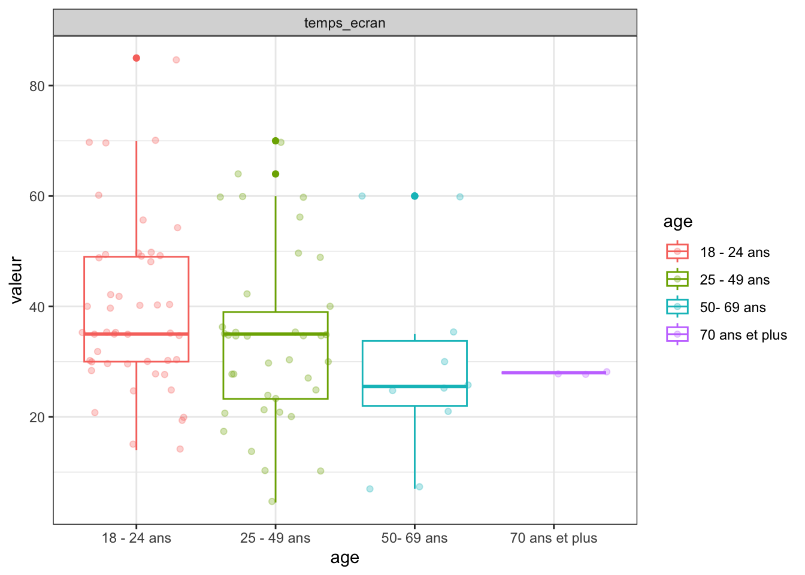
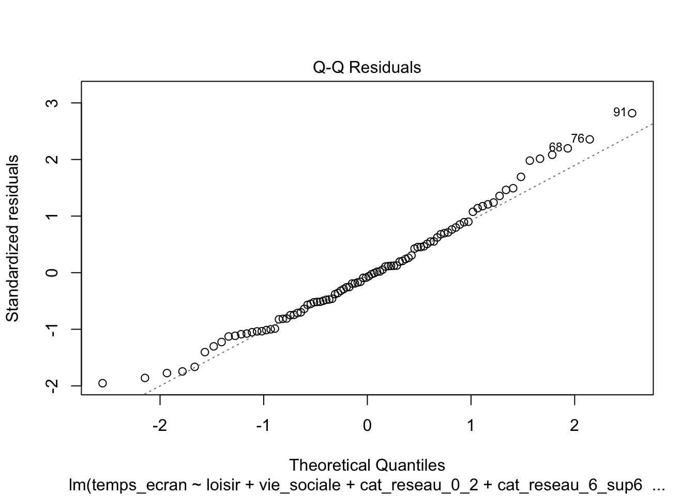

suppressPackageStartupMessages({
library(readxl)
library(writexl)
library(outliers)
library(dplyr)
library(VIM)
library(car)
library(MASS)
library(ggplot2)
library(EnvStats)
library(pander)
library(corrplot)
library(PerformanceAnalytics)
library(tidyverse)
library(questionr)
library(leaps)
library(stats)
library(lmtest)
library(AER)
library(here)
}) Économétrie linéaire avancée
Régression
MCO
Questionnaire
Analyse du temps d’écran chez les français de plus de 18 ans
(sur un eÃÅchantillon de 98 personnes en 2023)
Résumé
L’objectif de notre étude est d’identifier les facteurs influençant la consommation numérique hebdomadaire chez les adultes Français, à partir de 18 ans, à l’échelle nationale. Nous avons fait appel à la méthode des moindres carrés (MCO) qui nous a permis d’obtenir un modèle fiable validant toutes les conditions requises pour son application. Pour ce faire, nous avons opté pour l’utilisation d’un jeu de données se rapprochant le plus possible de la réalité. Par conséquent, nous avons directement interrogé la population à l’aide d’un questionnaire se basant sur la modélisation faite au préalable à partir de la littérature. Nous avons obtenu un échantillon non représentatif de 98 individus dû à un ratio femmes/hommes élevé.
Le modèle nous a donné d’une part des résultats attendus. En effet, les personnes ayant une vie sociale importante ou ne travaillant pas toute la journée sur un écran ont une consommation numérique hebdomadaire moindre par rapport aux casaniers et à ceux exerçant un métier pour lequel l’écran est le seul outil de travail. Puis, d’autre part, des résultats inattendus. En effet, une personne possédant un nombre d’appareils moindre a une consommation plus importante que celle ayant plus d’appareils, ou encore les personnes n’ayant pas la fibre passent plus de temps sur les écrans que ceux ayant la fibre.
Vous avez la possibilit√© de t√©l√©charger le document ici :) üì• T√©l√©charger le fichier PDF
Présentation du code
Je vous présente ci-dessous, le code utilisé pour mener à bien ce projet, avec les étapes et explications correspondantes.
Préparation des données
- Librairies
- Vecteur de couleur
couleurs_genre <- c("#9DBBA4", "#395948")
couleurs <- c("#9DBBA4", "#395948")Préparation et visualisation des données
- Téléchargement et visualisation du fichier, à l’aide de la librairie “readxl”
- Supprimer la colonne “horodateur” qui est inutile
ecran <- read_excel(here("data", "BDD_propre.xlsx"))
head(ecran)# A tibble: 6 × 21
Horodateur A quelle catégorie d’âge apparten…¹ A quel genre vous id…²
<dttm> <chr> <chr>
1 2023-11-30 16:40:29 25 - 49 ans Femme
2 2023-11-30 16:54:37 50- 69 ans Femme
3 2023-12-01 08:30:35 50- 69 ans Femme
4 2023-12-02 14:14:23 50- 69 ans Homme
5 2023-12-07 10:21:15 25 - 49 ans Femme
6 2023-12-07 11:30:43 70 ans et plus Femme
# ℹ abbreviated names: ¹​`A quelle catégorie d’âge appartenez-vous ?`,
# ²​`A quel genre vous identifiez-vous ?`
# ℹ 18 more variables:
# `Quelle est votre catégorie socioprofessionnelle ?` <chr>,
# `Où habitez-vous ?` <chr>,
# `Avec combien de personnes vivez-vous dans votre logement principal ? (Par exemple si vous êtes en couple répondez 1)` <dbl>,
# `Quel est votre revenu fiscal après impôt du foyer auquel vous êtes rattaché (par an) ? \r\nSi vous dépendez de vos parents mettez celui de vos parents.` <chr>, …ecran <- ecran[,-1]Renommer les colonnes
colnames(ecran) <- c("age", "genre", "csp", "lieu_de_vie", "nb_personnes", "revenu", "temps_ecran", "nb_appareils", "internet", "fibre", "forfait_tel", "telephone_pro", "ecran_travail", "sommeil", "stress", "loisir", "vie_sociale", "ecran_jour", "reseaux_sociaux", "nb_abonnements")Mettre en numérique les variables
str(ecran)tibble [98 × 20] (S3: tbl_df/tbl/data.frame)
$ age : chr [1:98] "25 - 49 ans" "50- 69 ans" "50- 69 ans" "50- 69 ans" ...
$ genre : chr [1:98] "Femme" "Femme" "Femme" "Homme" ...
$ csp : chr [1:98] "Cadres et professions intellectuelles supérieures" "Professions intermédiaires" "Cadres et professions intellectuelles supérieures" "Cadres et professions intellectuelles supérieures" ...
$ lieu_de_vie : chr [1:98] "Ville" "Campagne" "Périurbaine/ Banlieue" "Ville" ...
$ nb_personnes : num [1:98] 1 2 2 1 5 0 1 3 1 3 ...
$ revenu : chr [1:98] "30 000 - 40 000" "40 000 - 50 000" "70 000 - 80 000" "70 000 - 80 000" ...
$ temps_ecran : num [1:98] 35 35 30 60 64 28 28 35 25 21 ...
$ nb_appareils : chr [1:98] "3" "5" "4" "4" ...
$ internet : chr [1:98] "Oui, avec la fibre" "Oui, avec la fibre" "Oui, avec la fibre" "Oui, avec la fibre" ...
$ fibre : chr [1:98] "Oui" "Oui" "Oui" "Oui" ...
$ forfait_tel : chr [1:98] "10 et 15 €" "10 et 15 €" "15 et 20 €" "0" ...
$ telephone_pro : chr [1:98] "Oui" "Non" "Oui" "Oui" ...
$ ecran_travail : chr [1:98] "Toute la journée" "Fréquemment (Plus de la moitié du temps)" "Fréquemment (Plus de la moitié du temps)" "Toute la journée" ...
$ sommeil : chr [1:98] "5h – 7h" "7h et 9h" "7h et 9h" "5h – 7h" ...
$ stress : chr [1:98] "Parfois" "Parfois" "Rarement" "Fréquemment" ...
$ loisir : num [1:98] 3 10 1 6 12 2 6 21 30 20 ...
$ vie_sociale : num [1:98] 14 15 2 8 8 7 10 20 80 10 ...
$ ecran_jour : chr [1:98] "Le soir" "L’après midi" "Le matin" "Le soir" ...
$ reseaux_sociaux: chr [1:98] "5" "2" "1" "0" ...
$ nb_abonnements : chr [1:98] "0" "1" "3" "0" ...ecran$loisir <- as.numeric(ecran$loisir)
ecran$vie_sociale <- as.numeric(ecran$vie_sociale)
str(ecran)tibble [98 × 20] (S3: tbl_df/tbl/data.frame)
$ age : chr [1:98] "25 - 49 ans" "50- 69 ans" "50- 69 ans" "50- 69 ans" ...
$ genre : chr [1:98] "Femme" "Femme" "Femme" "Homme" ...
$ csp : chr [1:98] "Cadres et professions intellectuelles supérieures" "Professions intermédiaires" "Cadres et professions intellectuelles supérieures" "Cadres et professions intellectuelles supérieures" ...
$ lieu_de_vie : chr [1:98] "Ville" "Campagne" "Périurbaine/ Banlieue" "Ville" ...
$ nb_personnes : num [1:98] 1 2 2 1 5 0 1 3 1 3 ...
$ revenu : chr [1:98] "30 000 - 40 000" "40 000 - 50 000" "70 000 - 80 000" "70 000 - 80 000" ...
$ temps_ecran : num [1:98] 35 35 30 60 64 28 28 35 25 21 ...
$ nb_appareils : chr [1:98] "3" "5" "4" "4" ...
$ internet : chr [1:98] "Oui, avec la fibre" "Oui, avec la fibre" "Oui, avec la fibre" "Oui, avec la fibre" ...
$ fibre : chr [1:98] "Oui" "Oui" "Oui" "Oui" ...
$ forfait_tel : chr [1:98] "10 et 15 €" "10 et 15 €" "15 et 20 €" "0" ...
$ telephone_pro : chr [1:98] "Oui" "Non" "Oui" "Oui" ...
$ ecran_travail : chr [1:98] "Toute la journée" "Fréquemment (Plus de la moitié du temps)" "Fréquemment (Plus de la moitié du temps)" "Toute la journée" ...
$ sommeil : chr [1:98] "5h – 7h" "7h et 9h" "7h et 9h" "5h – 7h" ...
$ stress : chr [1:98] "Parfois" "Parfois" "Rarement" "Fréquemment" ...
$ loisir : num [1:98] 3 10 1 6 12 2 6 21 30 20 ...
$ vie_sociale : num [1:98] 14 15 2 8 8 7 10 20 80 10 ...
$ ecran_jour : chr [1:98] "Le soir" "L’après midi" "Le matin" "Le soir" ...
$ reseaux_sociaux: chr [1:98] "5" "2" "1" "0" ...
$ nb_abonnements : chr [1:98] "0" "1" "3" "0" ...summary(ecran) age genre csp lieu_de_vie
Length:98 Length:98 Length:98 Length:98
Class :character Class :character Class :character Class :character
Mode :character Mode :character Mode :character Mode :character
nb_personnes revenu temps_ecran nb_appareils
Min. :0.000 Length:98 Min. : 4.50 Length:98
1st Qu.:1.000 Class :character 1st Qu.:26.25 Class :character
Median :1.000 Mode :character Median :35.00 Mode :character
Mean :1.622 Mean :35.76
3rd Qu.:3.000 3rd Qu.:42.00
Max. :5.000 Max. :85.00
internet fibre forfait_tel telephone_pro
Length:98 Length:98 Length:98 Length:98
Class :character Class :character Class :character Class :character
Mode :character Mode :character Mode :character Mode :character
ecran_travail sommeil stress loisir
Length:98 Length:98 Length:98 Min. : 0.00
Class :character Class :character Class :character 1st Qu.: 4.00
Mode :character Mode :character Mode :character Median : 10.00
Mean : 12.52
3rd Qu.: 15.00
Max. :100.00
NA's :7
vie_sociale ecran_jour reseaux_sociaux nb_abonnements
Min. : 0.00 Length:98 Length:98 Length:98
1st Qu.: 5.00 Class :character Class :character Class :character
Median :12.00 Mode :character Mode :character Mode :character
Mean :16.36
3rd Qu.:21.00
Max. :80.00
NA's :13 Mettre en facteurs les variables
ecran$age <- as.factor(ecran$age)
ecran$genre <- as.factor(ecran$genre)
ecran$csp <- as.factor(ecran$csp)
ecran$lieu_de_vie <- as.factor(ecran$lieu_de_vie)
ecran$revenu <- as.factor(ecran$revenu)
ecran$nb_appareils <- as.factor(ecran$nb_appareils)
ecran$internet <- as.factor(ecran$internet)
ecran$fibre <- as.factor(ecran$fibre)
ecran$forfait_tel <- as.factor(ecran$forfait_tel)
ecran$telephone_pro <- as.factor(ecran$telephone_pro)
ecran$ecran_travail <- as.factor(ecran$ecran_travail)
ecran$sommeil <- as.factor(ecran$sommeil)
ecran$stress <- as.factor(ecran$stress)
ecran$ecran_jour <- as.factor(ecran$ecran_jour)
ecran$reseaux_sociaux <- as.factor(ecran$reseaux_sociaux)
ecran$nb_abonnements <- as.factor(ecran$nb_abonnements)Résumé des toutes les variables
str(ecran)tibble [98 × 20] (S3: tbl_df/tbl/data.frame)
$ age : Factor w/ 4 levels "18 - 24 ans",..: 2 3 3 3 2 4 2 2 3 2 ...
$ genre : Factor w/ 2 levels "Femme","Homme": 1 1 1 2 1 1 1 2 1 2 ...
$ csp : Factor w/ 8 levels "Agriculteurs exploitants",..: 4 7 4 4 5 8 5 5 5 5 ...
$ lieu_de_vie : Factor w/ 3 levels "Campagne","Périurbaine/ Banlieue",..: 3 1 2 3 1 1 1 2 1 2 ...
$ nb_personnes : num [1:98] 1 2 2 1 5 0 1 3 1 3 ...
$ revenu : Factor w/ 9 levels "< 10 000","10 000 - 20 000",..: 4 5 8 8 7 2 3 5 4 5 ...
$ temps_ecran : num [1:98] 35 35 30 60 64 28 28 35 25 21 ...
$ nb_appareils : Factor w/ 11 levels "1","10","2","3",..: 4 6 5 5 8 4 4 5 9 7 ...
$ internet : Factor w/ 4 levels "Non","Oui, avec l’ADSL",..: 3 3 3 3 2 2 3 3 3 3 ...
$ fibre : Factor w/ 2 levels "Non","Oui": 2 2 2 2 1 2 2 2 2 2 ...
$ forfait_tel : Factor w/ 9 levels "0","10 et 15 €",..: 2 2 3 1 3 8 4 3 3 5 ...
$ telephone_pro : Factor w/ 2 levels "Non","Oui": 2 1 2 2 1 1 1 2 1 2 ...
$ ecran_travail : Factor w/ 5 levels "Fréquemment (Plus de la moitié du temps)",..: 5 1 1 5 5 2 3 3 3 4 ...
$ sommeil : Factor w/ 4 levels "3h – 5h","5h – 7h",..: 2 3 3 2 3 3 2 3 3 3 ...
$ stress : Factor w/ 5 levels "Fréquemment",..: 3 3 4 1 1 4 1 4 2 4 ...
$ loisir : num [1:98] 3 10 1 6 12 2 6 21 30 20 ...
$ vie_sociale : num [1:98] 14 15 2 8 8 7 10 20 80 10 ...
$ ecran_jour : Factor w/ 7 levels "L’après midi",..: 7 1 3 7 1 7 1 7 1 1 ...
$ reseaux_sociaux: Factor w/ 11 levels "0","1","2","3",..: 6 3 2 1 1 1 2 4 3 3 ...
$ nb_abonnements : Factor w/ 9 levels "0","1","10","2",..: 1 2 5 1 2 2 1 2 2 2 ...summary(ecran) age genre
18 - 24 ans :47 Femme:72
25 - 49 ans :38 Homme:26
50- 69 ans :10
70 ans et plus: 3
csp
Employés :34
Autres personnes sans activité professionnelle (par exemple les chômeurs ou les étudiants):31
Cadres et professions intellectuelles supérieures :17
Professions intermédiaires : 6
Retraités : 4
Ouvriers : 3
(Other) : 3
lieu_de_vie nb_personnes revenu
Campagne :36 Min. :0.000 40 000 - 50 000:21
Périurbaine/ Banlieue:11 1st Qu.:1.000 20 000 - 30 000:18
Ville :51 Median :1.000 10 000 - 20 000:17
Mean :1.622 30 000 - 40 000:12
3rd Qu.:3.000 < 10 000 :11
Max. :5.000 (Other) :10
NA's : 9
temps_ecran nb_appareils internet fibre
Min. : 4.50 3 :40 Non : 1 Non : 5
1st Qu.:26.25 4 :19 Oui, avec l’ADSL :17 Oui :84
Median :35.00 2 :14 Oui, avec la fibre :71 NA's: 9
Mean :35.76 5 :10 Oui, avec une autre solution: 9
3rd Qu.:42.00 6 : 5
Max. :85.00 7 : 3
(Other): 7
forfait_tel telephone_pro
15 et 20 € :35 Non:33
10 et 15 € :20 Oui:65
Plus de 35€ :12
20 et 25 € :11
Entre 5 et 10 €: 6
30 et 35 € : 5
(Other) : 9
ecran_travail sommeil
Fréquemment (Plus de la moitié du temps) :26 3h – 5h : 9
Jamais : 4 5h – 7h :32
Parfois (Entre un quart et la moitié du temps):17 7h et 9h :54
Rarement :11 Plus de 9h: 3
Toute la journée :37
NA's : 3
stress loisir vie_sociale
Fréquemment:26 Min. : 0.00 Min. : 0.00
Jamais : 2 1st Qu.: 4.00 1st Qu.: 5.00
Parfois :39 Median : 10.00 Median :12.00
Rarement :15 Mean : 12.52 Mean :16.36
Toujours :16 3rd Qu.: 15.00 3rd Qu.:21.00
Max. :100.00 Max. :80.00
NA's :7 NA's :13
ecran_jour reseaux_sociaux nb_abonnements
L’après midi : 9 3 :24 1 :34
L’après midi, Le soir :11 2 :14 2 :22
Le matin : 5 4 :12 0 :17
Le matin, L’après midi : 7 5 :12 3 :12
Le matin, L’après midi, Le soir: 7 6 : 9 4 : 8
Le matin, Le soir : 3 1 : 8 5 : 2
Le soir :56 (Other):19 (Other): 3 Valeurs manquantes - visualisation
sum(is.na(ecran))[1] 41lapply(ecran, function(x) which(is.na(x)))$age
integer(0)
$genre
integer(0)
$csp
integer(0)
$lieu_de_vie
integer(0)
$nb_personnes
integer(0)
$revenu
[1] 22 24 26 33 44 45 54 84 88
$temps_ecran
integer(0)
$nb_appareils
integer(0)
$internet
integer(0)
$fibre
[1] 19 25 37 49 50 70 73 80 82
$forfait_tel
integer(0)
$telephone_pro
integer(0)
$ecran_travail
[1] 42 60 88
$sommeil
integer(0)
$stress
integer(0)
$loisir
[1] 14 15 23 47 54 62 64
$vie_sociale
[1] 14 15 22 43 44 47 51 52 54 60 62 64 67
$ecran_jour
integer(0)
$reseaux_sociaux
integer(0)
$nb_abonnements
integer(0)Nous avons au total 41 valeurs manquantes
Résumé des variables numériques
summary(select_if(ecran, is.numeric)) nb_personnes temps_ecran loisir vie_sociale
Min. :0.000 Min. : 4.50 Min. : 0.00 Min. : 0.00
1st Qu.:1.000 1st Qu.:26.25 1st Qu.: 4.00 1st Qu.: 5.00
Median :1.000 Median :35.00 Median : 10.00 Median :12.00
Mean :1.622 Mean :35.76 Mean : 12.52 Mean :16.36
3rd Qu.:3.000 3rd Qu.:42.00 3rd Qu.: 15.00 3rd Qu.:21.00
Max. :5.000 Max. :85.00 Max. :100.00 Max. :80.00
NA's :7 NA's :13 sapply(select_if(ecran, is.numeric), sd)nb_personnes temps_ecran loisir vie_sociale
1.350947 15.699702 NA NA Imputation des valeurs manquantes
L’algorithme des k-plus proches voisins utilisera le voisin le plus proche pour l’imputation
ecran <- kNN(ecran, dist_var = colnames(ecran), k = 1)
ecran <- ecran[, -c(21:40)]Exportation de la base de données sous format excel
# write_xlsx(x = ecran, path = "data/BDD_sans_NA.xlsx")Utilisation de cette nouvelle base pour la suite du travail
ecran <- read_excel(here("data", "BDD_sans_NA.xlsx"), col_names = T )colnames(ecran) <- c("age", "genre", "csp", "lieu_de_vie", "nb_personnes", "revenu", "temps_ecran", "nb_appareils", "internet", "fibre", "forfait_tel", "telephone_pro", "ecran_travail", "sommeil", "stress", "loisir", "vie_sociale", "ecran_jour", "reseaux_sociaux", "nb_abonnements")Mettre en facteurs les variables
str(ecran)tibble [98 × 20] (S3: tbl_df/tbl/data.frame)
$ age : chr [1:98] "25 - 49 ans" "50- 69 ans" "50- 69 ans" "50- 69 ans" ...
$ genre : chr [1:98] "Femme" "Femme" "Femme" "Homme" ...
$ csp : chr [1:98] "Cadres et professions intellectuelles supérieures" "Professions intermédiaires" "Cadres et professions intellectuelles supérieures" "Cadres et professions intellectuelles supérieures" ...
$ lieu_de_vie : chr [1:98] "Ville" "Campagne" "Périurbaine/ Banlieue" "Ville" ...
$ nb_personnes : num [1:98] 1 2 2 1 5 0 1 3 1 3 ...
$ revenu : chr [1:98] "30 000 - 40 000" "40 000 - 50 000" "70 000 - 80 000" "70 000 - 80 000" ...
$ temps_ecran : num [1:98] 35 35 30 60 64 28 28 35 25 21 ...
$ nb_appareils : chr [1:98] "3" "5" "4" "4" ...
$ internet : chr [1:98] "Oui, avec la fibre" "Oui, avec la fibre" "Oui, avec la fibre" "Oui, avec la fibre" ...
$ fibre : chr [1:98] "Oui" "Oui" "Oui" "Oui" ...
$ forfait_tel : chr [1:98] "10 et 15 €" "10 et 15 €" "15 et 20 €" "0" ...
$ telephone_pro : chr [1:98] "Oui" "Non" "Oui" "Oui" ...
$ ecran_travail : chr [1:98] "Toute la journée" "Fréquemment (Plus de la moitié du temps)" "Fréquemment (Plus de la moitié du temps)" "Toute la journée" ...
$ sommeil : chr [1:98] "5h – 7h" "7h et 9h" "7h et 9h" "5h – 7h" ...
$ stress : chr [1:98] "Parfois" "Parfois" "Rarement" "Fréquemment" ...
$ loisir : num [1:98] 3 10 1 6 12 2 6 21 30 20 ...
$ vie_sociale : num [1:98] 14 15 2 8 8 7 10 20 80 10 ...
$ ecran_jour : chr [1:98] "Le soir" "L’après midi" "Le matin" "Le soir" ...
$ reseaux_sociaux: chr [1:98] "5" "2" "1" "0" ...
$ nb_abonnements : chr [1:98] "0" "1" "3" "0" ...ecran$age <- as.factor(ecran$age)
ecran$genre <- as.factor(ecran$genre)
ecran$csp <- as.factor(ecran$csp)
ecran$lieu_de_vie <- as.factor(ecran$lieu_de_vie)
ecran$revenu <- as.factor(ecran$revenu)
ecran$nb_appareils <- as.factor(ecran$nb_appareils)
ecran$internet <- as.factor(ecran$internet)
ecran$fibre <- as.factor(ecran$fibre)
ecran$forfait_tel <- as.factor(ecran$forfait_tel)
ecran$telephone_pro <- as.factor(ecran$telephone_pro)
ecran$ecran_travail <- as.factor(ecran$ecran_travail)
ecran$sommeil <- as.factor(ecran$sommeil)
ecran$stress <- as.factor(ecran$stress)
ecran$ecran_jour <- as.factor(ecran$ecran_jour)
ecran$reseaux_sociaux <- as.factor(ecran$reseaux_sociaux)
ecran$nb_abonnements <- as.factor(ecran$nb_abonnements)
str(ecran)tibble [98 × 20] (S3: tbl_df/tbl/data.frame)
$ age : Factor w/ 4 levels "18 - 24 ans",..: 2 3 3 3 2 4 2 2 3 2 ...
$ genre : Factor w/ 2 levels "Femme","Homme": 1 1 1 2 1 1 1 2 1 2 ...
$ csp : Factor w/ 8 levels "Agriculteurs exploitants",..: 4 7 4 4 5 8 5 5 5 5 ...
$ lieu_de_vie : Factor w/ 3 levels "Campagne","Périurbaine/ Banlieue",..: 3 1 2 3 1 1 1 2 1 2 ...
$ nb_personnes : num [1:98] 1 2 2 1 5 0 1 3 1 3 ...
$ revenu : Factor w/ 9 levels "< 10 000","10 000 - 20 000",..: 4 5 8 8 7 2 3 5 4 5 ...
$ temps_ecran : num [1:98] 35 35 30 60 64 28 28 35 25 21 ...
$ nb_appareils : Factor w/ 11 levels "1","10","2","3",..: 4 6 5 5 8 4 4 5 9 7 ...
$ internet : Factor w/ 4 levels "Non","Oui, avec l’ADSL",..: 3 3 3 3 2 2 3 3 3 3 ...
$ fibre : Factor w/ 2 levels "Non","Oui": 2 2 2 2 1 2 2 2 2 2 ...
$ forfait_tel : Factor w/ 9 levels "0","10 et 15 €",..: 2 2 3 1 3 8 4 3 3 5 ...
$ telephone_pro : Factor w/ 2 levels "Non","Oui": 2 1 2 2 1 1 1 2 1 2 ...
$ ecran_travail : Factor w/ 5 levels "Fréquemment (Plus de la moitié du temps)",..: 5 1 1 5 5 2 3 3 3 4 ...
$ sommeil : Factor w/ 4 levels "3h – 5h","5h – 7h",..: 2 3 3 2 3 3 2 3 3 3 ...
$ stress : Factor w/ 5 levels "Fréquemment",..: 3 3 4 1 1 4 1 4 2 4 ...
$ loisir : num [1:98] 3 10 1 6 12 2 6 21 30 20 ...
$ vie_sociale : num [1:98] 14 15 2 8 8 7 10 20 80 10 ...
$ ecran_jour : Factor w/ 7 levels "L’après midi",..: 7 1 3 7 1 7 1 7 1 1 ...
$ reseaux_sociaux: Factor w/ 11 levels "0","1","2","3",..: 6 3 2 1 1 1 2 4 3 3 ...
$ nb_abonnements : Factor w/ 9 levels "0","1","10","2",..: 1 2 5 1 2 2 1 2 2 2 ...Statistiques descriptives
Analyse univariée des variables qualitatives
Tableaux de contingence
table(ecran$genre,ecran$age)
18 - 24 ans 25 - 49 ans 50- 69 ans 70 ans et plus
Femme 36 28 7 1
Homme 11 10 3 2table(ecran$csp)
Agriculteurs exploitants
1
Artisan/commerçant/Chef d’entreprise
2
Autres personnes sans activité professionnelle (par exemple les chômeurs ou les étudiants)
31
Cadres et professions intellectuelles supérieures
17
Employés
34
Ouvriers
3
Professions intermédiaires
6
Retraités
4 table(ecran$csp, ecran$revenu)
< 10 000
Agriculteurs exploitants 1
Artisan/commerçant/Chef d’entreprise 0
Autres personnes sans activité professionnelle (par exemple les chômeurs ou les étudiants) 4
Cadres et professions intellectuelles supérieures 0
Employés 6
Ouvriers 0
Professions intermédiaires 0
Retraités 0
10 000 - 20 000
Agriculteurs exploitants 0
Artisan/commerçant/Chef d’entreprise 0
Autres personnes sans activité professionnelle (par exemple les chômeurs ou les étudiants) 5
Cadres et professions intellectuelles supérieures 0
Employés 7
Ouvriers 0
Professions intermédiaires 4
Retraités 1
20 000 - 30 000
Agriculteurs exploitants 0
Artisan/commerçant/Chef d’entreprise 0
Autres personnes sans activité professionnelle (par exemple les chômeurs ou les étudiants) 6
Cadres et professions intellectuelles supérieures 4
Employés 9
Ouvriers 1
Professions intermédiaires 0
Retraités 2
30 000 - 40 000
Agriculteurs exploitants 0
Artisan/commerçant/Chef d’entreprise 1
Autres personnes sans activité professionnelle (par exemple les chômeurs ou les étudiants) 1
Cadres et professions intellectuelles supérieures 2
Employés 8
Ouvriers 0
Professions intermédiaires 0
Retraités 0
40 000 - 50 000
Agriculteurs exploitants 0
Artisan/commerçant/Chef d’entreprise 1
Autres personnes sans activité professionnelle (par exemple les chômeurs ou les étudiants) 11
Cadres et professions intellectuelles supérieures 8
Employés 3
Ouvriers 2
Professions intermédiaires 1
Retraités 0
50 000 - 60 000
Agriculteurs exploitants 0
Artisan/commerçant/Chef d’entreprise 0
Autres personnes sans activité professionnelle (par exemple les chômeurs ou les étudiants) 1
Cadres et professions intellectuelles supérieures 1
Employés 0
Ouvriers 0
Professions intermédiaires 1
Retraités 0
60 000 - 70 000
Agriculteurs exploitants 0
Artisan/commerçant/Chef d’entreprise 0
Autres personnes sans activité professionnelle (par exemple les chômeurs ou les étudiants) 0
Cadres et professions intellectuelles supérieures 0
Employés 1
Ouvriers 0
Professions intermédiaires 0
Retraités 1
70 000 - 80 000
Agriculteurs exploitants 0
Artisan/commerçant/Chef d’entreprise 0
Autres personnes sans activité professionnelle (par exemple les chômeurs ou les étudiants) 2
Cadres et professions intellectuelles supérieures 2
Employés 0
Ouvriers 0
Professions intermédiaires 0
Retraités 0
80 000 et plus
Agriculteurs exploitants 0
Artisan/commerçant/Chef d’entreprise 0
Autres personnes sans activité professionnelle (par exemple les chômeurs ou les étudiants) 1
Cadres et professions intellectuelles supérieures 0
Employés 0
Ouvriers 0
Professions intermédiaires 0
Retraités 0table(ecran$revenu)
< 10 000 10 000 - 20 000 20 000 - 30 000 30 000 - 40 000 40 000 - 50 000
11 17 22 12 26
50 000 - 60 000 60 000 - 70 000 70 000 - 80 000 80 000 et plus
3 2 4 1 Diagrammes en bâtons
ecran |>
ggplot() +
aes(x = age, fill = age) +
geom_bar(fill = "#395948") +
ggtitle("Répartition de l'âge") +
labs(x = "âge", y="effectif") +
theme_classic() +
theme(plot.title = element_text(hjust = 0.5, size = 12))ecran |>
count(genre) |>
ggplot() +
aes(x = "", y = n, fill = genre) +
geom_bar(stat = "identity", color="white") +
ggtitle("") +
theme(plot.title = element_text(hjust = 0.5, size = 12))+
coord_polar("y") +
scale_fill_manual(values = couleurs_genre) +
theme_void() +
theme(plot.title = element_text(hjust = 0.5, size = 12))+
geom_text(aes(label = n), position = position_stack(vjust = 0.5), color = "white",size = 5, fontface = "bold")ecran |>
ggplot() +
geom_bar(fill = "#395948") +
ggtitle("Répartition des lieux de résidence") +
aes(x = fct_infreq(lieu_de_vie), fill = lieu_de_vie) +
labs(x = "lieux de résidence",y="effectif") +
theme_classic() +
theme(plot.title = element_text(hjust = 0.5, size = 12)) Nous utilisons ‘levels’ pour renommer nos variables afin d’améliorer la visualisation. Cependant, il est important de noter que cela modifie également les noms dans la base de données
#levels(ecran$csp) <- c("agriculteurs","artisans","sans activité", "cadres","employés","ouvriers", "intermédiaire","retraités")
ecran |>
ggplot() +
aes(x =fct_infreq(csp), fill = csp) +
geom_bar(fill = "blue4") +
ggtitle("Répartition de la catégorie socio-professionnelle") +
labs(x = "csp", y="effectif") +
theme_classic() +
theme(plot.title = element_text(hjust = 0.5, size = 12),
axis.text.x = element_text(angle = 45, hjust = 1))ecran |>
ggplot() +
geom_bar(fill = "blue4") +
ggtitle("Répartition du revenu") +
aes(x = fct_infreq(revenu), fill = revenu) +
labs(x = "Revenu", y="effectif") +
theme_classic() +
theme(plot.title = element_text(hjust = 0.5, size = 12),
axis.text.x = element_text(angle = 45, hjust = 1)) #levels(ecran$internet) <- c("Non","ADSL","Fibre", "Autre solution")
ecran |>
ggplot(aes(x = internet, fill = internet)) +
geom_bar(fill = "#395948") +
ggtitle("Répartition des moyens de connexion") +
aes(x = fct_infreq(internet), fill = internet) +
labs(x = "internet", y="effectif") +
theme_classic() +
theme(plot.title = element_text(hjust = 0.5, size = 12))ecran |>
ggplot(aes(x = fct_infreq(nb_appareils), fill = nb_appareils)) +
geom_bar(fill = "blue4") +
ggtitle("Répartition du nombre d'appareils") +
labs(x = "appareils", y="effectif") +
theme_classic() +
theme(plot.title = element_text(hjust = 0.5, size = 12)) ecran |>
count(fibre) |>
ggplot() +
aes(x = "", y = n, fill = fibre) +
geom_bar(stat = "identity", color = "white") +
ggtitle("Répartition de l'accès à la fibre") +
coord_polar("y") +
scale_fill_manual(values = couleurs) +
theme_void() +
theme(plot.title = element_text(hjust = 0.5, size = 12))+
geom_text(aes(label = n), position = position_stack(vjust = 0.5), color = "white",size = 5, fontface = "bold")ecran |>
ggplot(aes(x = fct_infreq(forfait_tel), fill = forfait_tel)) +
geom_bar(fill = "blue4") +
ggtitle("Répartition des forfaits téléphoniques") +
labs(x = "forfait", y="effectif")+
theme_classic() +
theme(plot.title = element_text(hjust = 0.5, size = 12),
axis.text.x = element_text(angle = 45, hjust = 1)) ecran |>
count(telephone_pro) |>
ggplot() +
aes(x = "", y = n, fill = telephone_pro) +
geom_bar(stat = "identity", color = "white") +
ggtitle("Répartition de la possession d'un téléphone professionnel") +
coord_polar("y") +
scale_fill_manual(values = couleurs) +
theme_void() +
theme(plot.title = element_text(hjust = 0.5, size = 12))+
geom_text(aes(label = n), position = position_stack(vjust = 0.5), color = "white",size = 5, fontface = "bold") #levels(ecran$ecran_travail) <- c("Fréquemment", "Jamais", "Parfois", "Rarement", "Toute la journée")
ecran |>
ggplot(aes(x = fct_infreq(ecran_travail), fill = ecran_travail)) +
geom_bar(fill = "blue4") +
ggtitle("Répartition de la consommation numérique au travail") +
labs(x="fréquence",y="effectif")+
theme_classic() +
theme(plot.title = element_text(hjust = 0.5, size = 12))ecran |>
ggplot(aes(x = fct_infreq(sommeil), fill = sommeil)) +
geom_bar(fill = "blue4") +
ggtitle("Répartition du temps de sommeil") +
labs(x="durée",y="effectif")+
theme_classic()+
theme(plot.title = element_text(hjust = 0.5, size = 12))
ecran |>
ggplot(aes(x = fct_infreq(stress), fill = stress)) +
geom_bar(fill = "blue4") +
labs(x="fréquence", y="effectif")+
ggtitle("Répartition du stress") +
theme_classic()+
theme(plot.title = element_text(hjust = 0.5, size = 12))ecran |>
ggplot(aes(x = fct_infreq(ecran_jour), fill = ecran_jour)) +
geom_bar(fill = "blue4") +
ggtitle("Répartition du moment de la journée") +
labs(x="fréquence", y="effectif")+
theme_classic() +
theme(plot.title = element_text(hjust = 0.5, size = 12),
axis.text.x = element_text(angle = 45, hjust = 1))ecran |>
ggplot(aes(x = fct_infreq(reseaux_sociaux), fill = reseaux_sociaux)) +
geom_bar(fill = "blue4") +
ggtitle("Répartition des réseaux sociaux") +
labs(x="quantité",y="effectif")+
theme_classic()+
theme(plot.title = element_text(hjust = 0.5, size = 12))ecran |>
ggplot(aes(x = fct_infreq(nb_abonnements), fill = nb_abonnements)) +
geom_bar(fill = "blue4") +
ggtitle("Répartition des abonnements") +
labs(x="quantité", y="effectif")+
theme_classic() +
theme(plot.title = element_text(hjust = 0.5, size = 12))Analyse bivariée des variables qualitatives
ecran|>
pivot_longer(
cols = temps_ecran,
names_to = "mesure",
values_to = "valeur"
) |>
ggplot() +
aes(y = valeur, x = age, color = age) +
geom_boxplot() +
geom_jitter(alpha = 0.3) +
#scale_color_manual(values = vecteur_couleur)
facet_wrap(~ mesure, scales = "free_y") +
theme_bw()
ecran|>
pivot_longer(
cols = temps_ecran,
names_to = "mesure",
values_to = "valeur"
) |>
ggplot() +
aes(y = valeur, x = csp, color=csp) +
geom_boxplot() +
geom_jitter(alpha = 0.3) +
#scale_color_manual(values = vecteur_couleur)
facet_wrap(~ mesure, scales = "free_y") +
theme_bw() +
theme(axis.text.x = element_text(angle = 45, hjust = 1))ecran|>
pivot_longer(
cols = temps_ecran,
names_to = "mesure",
values_to = "valeur"
) |>
ggplot() +
aes(y = valeur, x = ecran_jour, color=ecran_jour) +
geom_boxplot() +
geom_jitter(alpha = 0.3) +
#scale_color_manual(values = vecteur_couleur)
facet_wrap(~ mesure, scales = "free_y") +
theme_bw() +
theme(axis.text.x = element_text(angle = 45, hjust = 1))ggplot(ecran) +
geom_boxplot(aes(x = csp, y = temps_ecran))Analyse univariée des variables quantitatives
str(ecran)tibble [98 × 20] (S3: tbl_df/tbl/data.frame)
$ age : Factor w/ 4 levels "18 - 24 ans",..: 2 3 3 3 2 4 2 2 3 2 ...
$ genre : Factor w/ 2 levels "Femme","Homme": 1 1 1 2 1 1 1 2 1 2 ...
$ csp : Factor w/ 8 levels "Agriculteurs exploitants",..: 4 7 4 4 5 8 5 5 5 5 ...
$ lieu_de_vie : Factor w/ 3 levels "Campagne","Périurbaine/ Banlieue",..: 3 1 2 3 1 1 1 2 1 2 ...
$ nb_personnes : num [1:98] 1 2 2 1 5 0 1 3 1 3 ...
$ revenu : Factor w/ 9 levels "< 10 000","10 000 - 20 000",..: 4 5 8 8 7 2 3 5 4 5 ...
$ temps_ecran : num [1:98] 35 35 30 60 64 28 28 35 25 21 ...
$ nb_appareils : Factor w/ 11 levels "1","10","2","3",..: 4 6 5 5 8 4 4 5 9 7 ...
$ internet : Factor w/ 4 levels "Non","Oui, avec l’ADSL",..: 3 3 3 3 2 2 3 3 3 3 ...
$ fibre : Factor w/ 2 levels "Non","Oui": 2 2 2 2 1 2 2 2 2 2 ...
$ forfait_tel : Factor w/ 9 levels "0","10 et 15 €",..: 2 2 3 1 3 8 4 3 3 5 ...
$ telephone_pro : Factor w/ 2 levels "Non","Oui": 2 1 2 2 1 1 1 2 1 2 ...
$ ecran_travail : Factor w/ 5 levels "Fréquemment (Plus de la moitié du temps)",..: 5 1 1 5 5 2 3 3 3 4 ...
$ sommeil : Factor w/ 4 levels "3h – 5h","5h – 7h",..: 2 3 3 2 3 3 2 3 3 3 ...
$ stress : Factor w/ 5 levels "Fréquemment",..: 3 3 4 1 1 4 1 4 2 4 ...
$ loisir : num [1:98] 3 10 1 6 12 2 6 21 30 20 ...
$ vie_sociale : num [1:98] 14 15 2 8 8 7 10 20 80 10 ...
$ ecran_jour : Factor w/ 7 levels "L’après midi",..: 7 1 3 7 1 7 1 7 1 1 ...
$ reseaux_sociaux: Factor w/ 11 levels "0","1","2","3",..: 6 3 2 1 1 1 2 4 3 3 ...
$ nb_abonnements : Factor w/ 9 levels "0","1","10","2",..: 1 2 5 1 2 2 1 2 2 2 ...summary(select_if(ecran, is.numeric)) nb_personnes temps_ecran loisir vie_sociale
Min. :0.000 Min. : 4.50 Min. : 0.00 Min. : 0.00
1st Qu.:1.000 1st Qu.:26.25 1st Qu.: 4.00 1st Qu.: 5.00
Median :1.000 Median :35.00 Median : 10.00 Median :10.00
Mean :1.622 Mean :35.76 Mean : 12.85 Mean :15.78
3rd Qu.:3.000 3rd Qu.:42.00 3rd Qu.: 17.25 3rd Qu.:20.75
Max. :5.000 Max. :85.00 Max. :100.00 Max. :80.00 Histogrammes
hist(ecran$nb_personnes, main= "Répartition du nombre de personnes dans le foyer", xlab="personnes", ylab = "nombre d'individus", col = "#395948")hist(ecran$temps_ecran, main= "Répartition du temps d'écrans", xlab="durée",ylab = "nombre d'individus", col = "#395948")hist(ecran$loisir, main= "Répartition du temps consacré aux loisirs", xlab="durée", ylab = "nombre d'individus", col = "#395948")hist(ecran$vie_sociale, main= "Répartition du temps consacré à la vie sociale", xlab="durée",ylab = "nombre d'individus", col = "#395948")Boxplots
ecran|>
pivot_longer(
cols = where(is.numeric)
) |>
ggplot() +
aes(y = value) +
facet_wrap(~ name, scales = "free_y") +
geom_boxplot() +
theme_light()Valeurs atypiques - Test Rosner
rosnerTest(ecran$temps_ecran,k=2, alpha=0.05)
Results of Outlier Test
-------------------------
Test Method: Rosner's Test for Outliers
Hypothesized Distribution: Normal
Data: ecran$temps_ecran
Sample Size: 98
Test Statistics: R.1 = 3.136677
R.2 = 2.324461
Test Statistic Parameter: k = 2
Alternative Hypothesis: Up to 2 observations are not
from the same Distribution.
Type I Error: 5%
Number of Outliers Detected: 0
i Mean.i SD.i Value Obs.Num R.i+1 lambda.i+1 Outlier
1 0 35.75510 15.69970 85 64 3.136677 3.377176 FALSE
2 1 35.24742 14.95081 70 21 2.324461 3.373658 FALSErosnerTest(ecran$loisir,k=2, alpha=0.05)
Results of Outlier Test
-------------------------
Test Method: Rosner's Test for Outliers
Hypothesized Distribution: Normal
Data: ecran$loisir
Sample Size: 98
Test Statistics: R.1 = 6.501007
R.2 = 4.368825
Test Statistic Parameter: k = 2
Alternative Hypothesis: Up to 2 observations are not
from the same Distribution.
Type I Error: 5%
Number of Outliers Detected: 2
i Mean.i SD.i Value Obs.Num R.i+1 lambda.i+1 Outlier
1 0 12.85204 13.40530 100 61 6.501007 3.377176 TRUE
2 1 11.95361 10.08198 56 34 4.368825 3.373658 TRUErosnerTest(ecran$vie_sociale,k=5, alpha=0.05)
Results of Outlier Test
-------------------------
Test Method: Rosner's Test for Outliers
Hypothesized Distribution: Normal
Data: ecran$vie_sociale
Sample Size: 98
Test Statistics: R.1 = 4.546626
R.2 = 2.773623
R.3 = 2.908100
R.4 = 2.892232
R.5 = 2.778605
Test Statistic Parameter: k = 5
Alternative Hypothesis: Up to 5 observations are not
from the same Distribution.
Type I Error: 5%
Number of Outliers Detected: 1
i Mean.i SD.i Value Obs.Num R.i+1 lambda.i+1 Outlier
1 0 15.77551 14.12575 80 9 4.546626 3.377176 TRUE
2 1 15.11340 12.57799 50 79 2.773623 3.373658 FALSE
3 2 14.75000 12.12132 50 90 2.908100 3.370097 FALSE
4 3 14.37895 11.62461 48 75 2.892232 3.366490 FALSE
5 4 14.02128 11.14902 45 48 2.778605 3.362836 FALSED’apres le test de Rosner nous avons 2 valeurs atypiques dans la variable “loisir” et 1 valeur atypique dans la variable “vie_sociale”. Les observations 80, 61 et 34 sont donc des valeurs atypiques
Supprimer les valeurs atypiques
ecran <- ecran[-c(9, 61, 34),]
dim(ecran)[1] 95 20Statistiques descriptives sans les valeurs atypiques
Analyse univariée des variables quantitatives
str(ecran)tibble [95 × 20] (S3: tbl_df/tbl/data.frame)
$ age : Factor w/ 4 levels "18 - 24 ans",..: 2 3 3 3 2 4 2 2 2 2 ...
$ genre : Factor w/ 2 levels "Femme","Homme": 1 1 1 2 1 1 1 2 2 1 ...
$ csp : Factor w/ 8 levels "Agriculteurs exploitants",..: 4 7 4 4 5 8 5 5 5 2 ...
$ lieu_de_vie : Factor w/ 3 levels "Campagne","Périurbaine/ Banlieue",..: 3 1 2 3 1 1 1 2 2 3 ...
$ nb_personnes : num [1:95] 1 2 2 1 5 0 1 3 3 1 ...
$ revenu : Factor w/ 9 levels "< 10 000","10 000 - 20 000",..: 4 5 8 8 7 2 3 5 5 4 ...
$ temps_ecran : num [1:95] 35 35 30 60 64 28 28 35 21 60 ...
$ nb_appareils : Factor w/ 11 levels "1","10","2","3",..: 4 6 5 5 8 4 4 5 7 5 ...
$ internet : Factor w/ 4 levels "Non","Oui, avec l’ADSL",..: 3 3 3 3 2 2 3 3 3 3 ...
$ fibre : Factor w/ 2 levels "Non","Oui": 2 2 2 2 1 2 2 2 2 2 ...
$ forfait_tel : Factor w/ 9 levels "0","10 et 15 €",..: 2 2 3 1 3 8 4 3 5 3 ...
$ telephone_pro : Factor w/ 2 levels "Non","Oui": 2 1 2 2 1 1 1 2 2 2 ...
$ ecran_travail : Factor w/ 5 levels "Fréquemment (Plus de la moitié du temps)",..: 5 1 1 5 5 2 3 3 4 5 ...
$ sommeil : Factor w/ 4 levels "3h – 5h","5h – 7h",..: 2 3 3 2 3 3 2 3 3 1 ...
$ stress : Factor w/ 5 levels "Fréquemment",..: 3 3 4 1 1 4 1 4 4 5 ...
$ loisir : num [1:95] 3 10 1 6 12 2 6 21 20 4 ...
$ vie_sociale : num [1:95] 14 15 2 8 8 7 10 20 10 14 ...
$ ecran_jour : Factor w/ 7 levels "L’après midi",..: 7 1 3 7 1 7 1 7 1 4 ...
$ reseaux_sociaux: Factor w/ 11 levels "0","1","2","3",..: 6 3 2 1 1 1 2 4 3 7 ...
$ nb_abonnements : Factor w/ 9 levels "0","1","10","2",..: 1 2 5 1 2 2 1 2 2 5 ...summary(ecran) age genre
18 - 24 ans :45 Femme:70
25 - 49 ans :38 Homme:25
50- 69 ans : 9
70 ans et plus: 3
csp
Employés :33
Autres personnes sans activité professionnelle (par exemple les chômeurs ou les étudiants):29
Cadres et professions intellectuelles supérieures :17
Professions intermédiaires : 6
Retraités : 4
Ouvriers : 3
(Other) : 3
lieu_de_vie nb_personnes revenu
Campagne :35 Min. :0.000 40 000 - 50 000:26
Périurbaine/ Banlieue:11 1st Qu.:1.000 20 000 - 30 000:22
Ville :49 Median :1.000 10 000 - 20 000:17
Mean :1.663 < 10 000 :11
3rd Qu.:3.000 30 000 - 40 000:10
Max. :5.000 50 000 - 60 000: 3
(Other) : 6
temps_ecran nb_appareils internet fibre
Min. : 4.50 3 :39 Non : 1 Non: 6
1st Qu.:26.50 4 :18 Oui, avec l’ADSL :17 Oui:89
Median :35.00 2 :14 Oui, avec la fibre :68
Mean :35.88 5 :10 Oui, avec une autre solution: 9
3rd Qu.:45.00 6 : 5
Max. :85.00 7 : 3
(Other): 6
forfait_tel telephone_pro
15 et 20 € :34 Non:32
10 et 15 € :20 Oui:63
Plus de 35€ :11
20 et 25 € :10
Entre 5 et 10 €: 6
30 et 35 € : 5
(Other) : 9
ecran_travail sommeil
Fréquemment (Plus de la moitié du temps) :25 3h – 5h : 9
Jamais : 4 5h – 7h :32
Parfois (Entre un quart et la moitié du temps):16 7h et 9h :51
Rarement :12 Plus de 9h: 3
Toute la journée :38
stress loisir vie_sociale
Fréquemment:26 Min. : 0.0 Min. : 0.00
Jamais : 1 1st Qu.: 4.0 1st Qu.: 5.00
Parfois :38 Median :10.0 Median :10.00
Rarement :15 Mean :11.3 Mean :15.12
Toujours :15 3rd Qu.:15.0 3rd Qu.:20.50
Max. :42.0 Max. :50.00
ecran_jour reseaux_sociaux nb_abonnements
L’après midi : 8 3 :24 1 :33
L’après midi, Le soir :10 2 :13 2 :21
Le matin : 5 5 :12 0 :17
Le matin, L’après midi : 7 4 :11 3 :12
Le matin, L’après midi, Le soir: 7 6 : 9 4 : 8
Le matin, Le soir : 3 1 : 8 5 : 2
Le soir :55 (Other):18 (Other): 2 summary(select_if(ecran, is.numeric)) nb_personnes temps_ecran loisir vie_sociale
Min. :0.000 Min. : 4.50 Min. : 0.0 Min. : 0.00
1st Qu.:1.000 1st Qu.:26.50 1st Qu.: 4.0 1st Qu.: 5.00
Median :1.000 Median :35.00 Median :10.0 Median :10.00
Mean :1.663 Mean :35.88 Mean :11.3 Mean :15.12
3rd Qu.:3.000 3rd Qu.:45.00 3rd Qu.:15.0 3rd Qu.:20.50
Max. :5.000 Max. :85.00 Max. :42.0 Max. :50.00 Histogrammes
par(mfrow = c(2,2))
hist(ecran$nb_personnes, main= "Répartition du nombre de personnes dans le foyer", xlab="personnes",ylab = "nombre d'individus", col = "blue4")
hist(ecran$temps_ecran, main= "Répartition du temps d'écrans", xlab="durée", ylab = "nombre d'individus", col = "blue4")
hist(ecran$loisir, main= "Répartition du temps consacré aux loisirs", xlab="durée", ylab = "nombre d'individus", col = "blue4")
hist(ecran$vie_sociale, main= "Répartition du temps consacré à la vie sociale", xlab="durée",ylab = "nombre d'individus", col = "blue4")
Analyse bivariée des variables quantitatives
Nous observons à l’aide de nuages de points le lien entre “temps_ecran” (y) et les variables explicatives
par(mfrow = c(2,2))
purrr::map2(
.x = c("nb_personnes", "loisir", "vie_sociale"),
.y = c("temps_ecran", "temps_ecran", "temps_ecran"),
.f = ~ ggplot(ecran) +
aes(x = get(.x), y = get(.y)) +
geom_point() +
labs(x = .x, y = .y) +
ggtitle(paste("Corrélation entre", .x, "et", .y)) +
theme_classic() +
theme(plot.title = element_text(hjust = 0.5, size = 12, face="bold"))
)[[1]]
[[2]]
[[3]]Correlation
Sous forme de matrice :
mydata <- ecran[,c("nb_personnes","temps_ecran","loisir","vie_sociale")]
corr_mat=cor(mydata,method="s")
corr_mat nb_personnes temps_ecran loisir vie_sociale
nb_personnes 1.00000000 0.04474111 -0.0634830 0.08655831
temps_ecran 0.04474111 1.00000000 -0.2013519 -0.07046714
loisir -0.06348300 -0.20135191 1.0000000 0.44449510
vie_sociale 0.08655831 -0.07046714 0.4444951 1.00000000corrplot(corr_mat, method = 'number',type="upper", tl.srt=45)corrplot(corr_mat,type="upper")Nous pouvons voir que la corrélation est très faible entre chaque variable explicative.De plus, la variable à expliquer a une corrélation négative avec les variables “loisir” et “vie_sociale” et positive avec la variable “nb_personnes”.
- Test de normalité des variables numeriques :
ks.test(ecran$nb_personnes,"pnorm",mean(ecran$nb_personnes),sd(ecran$nb_personnes))Warning in ks.test.default(ecran$nb_personnes, "pnorm",
mean(ecran$nb_personnes), : ties should not be present for the
Kolmogorov-Smirnov test
Asymptotic one-sample Kolmogorov-Smirnov test
data: ecran$nb_personnes
D = 0.24631, p-value = 1.972e-05
alternative hypothesis: two-sidedks.test(ecran$loisir,"pnorm",mean(ecran$loisir),sd(ecran$loisir))Warning in ks.test.default(ecran$loisir, "pnorm", mean(ecran$loisir),
sd(ecran$loisir)): ties should not be present for the Kolmogorov-Smirnov test
Asymptotic one-sample Kolmogorov-Smirnov test
data: ecran$loisir
D = 0.15804, p-value = 0.01738
alternative hypothesis: two-sidedks.test(ecran$vie_sociale,"pnorm",mean(ecran$vie_sociale),sd(ecran$vie_sociale))Warning in ks.test.default(ecran$vie_sociale, "pnorm", mean(ecran$vie_sociale),
: ties should not be present for the Kolmogorov-Smirnov test
Asymptotic one-sample Kolmogorov-Smirnov test
data: ecran$vie_sociale
D = 0.18785, p-value = 0.00245
alternative hypothesis: two-sidedLes variables ne suivent pas la loi normale , on va donc utiliser le coefficient de Spearman
Sous forme de tableau :
cor(ecran[,c("nb_personnes","temps_ecran","loisir","vie_sociale")],
use="complete.obs",method = c("spearman")) nb_personnes temps_ecran loisir vie_sociale
nb_personnes 1.00000000 0.04474111 -0.0634830 0.08655831
temps_ecran 0.04474111 1.00000000 -0.2013519 -0.07046714
loisir -0.06348300 -0.20135191 1.0000000 0.44449510
vie_sociale 0.08655831 -0.07046714 0.4444951 1.00000000Pour avoir un aperçu visuel, nous utilisons une matrice de corrélation complétée par les nuages de points et les histogrammes.
#chart.Correlation(mydata, histogram=TRUE, pch=19,method = c("spearman"))- Conclusion : Pas de corrélation entre ces variables explicatives donc nous allons les conserver.
Catégories
Pour avoir un nombre de variables correctes et pas démesurés ; Création ecran2
ecran2 <- ecran
summary(ecran2) age genre
18 - 24 ans :45 Femme:70
25 - 49 ans :38 Homme:25
50- 69 ans : 9
70 ans et plus: 3
csp
Employés :33
Autres personnes sans activité professionnelle (par exemple les chômeurs ou les étudiants):29
Cadres et professions intellectuelles supérieures :17
Professions intermédiaires : 6
Retraités : 4
Ouvriers : 3
(Other) : 3
lieu_de_vie nb_personnes revenu
Campagne :35 Min. :0.000 40 000 - 50 000:26
Périurbaine/ Banlieue:11 1st Qu.:1.000 20 000 - 30 000:22
Ville :49 Median :1.000 10 000 - 20 000:17
Mean :1.663 < 10 000 :11
3rd Qu.:3.000 30 000 - 40 000:10
Max. :5.000 50 000 - 60 000: 3
(Other) : 6
temps_ecran nb_appareils internet fibre
Min. : 4.50 3 :39 Non : 1 Non: 6
1st Qu.:26.50 4 :18 Oui, avec l’ADSL :17 Oui:89
Median :35.00 2 :14 Oui, avec la fibre :68
Mean :35.88 5 :10 Oui, avec une autre solution: 9
3rd Qu.:45.00 6 : 5
Max. :85.00 7 : 3
(Other): 6
forfait_tel telephone_pro
15 et 20 € :34 Non:32
10 et 15 € :20 Oui:63
Plus de 35€ :11
20 et 25 € :10
Entre 5 et 10 €: 6
30 et 35 € : 5
(Other) : 9
ecran_travail sommeil
Fréquemment (Plus de la moitié du temps) :25 3h – 5h : 9
Jamais : 4 5h – 7h :32
Parfois (Entre un quart et la moitié du temps):16 7h et 9h :51
Rarement :12 Plus de 9h: 3
Toute la journée :38
stress loisir vie_sociale
Fréquemment:26 Min. : 0.0 Min. : 0.00
Jamais : 1 1st Qu.: 4.0 1st Qu.: 5.00
Parfois :38 Median :10.0 Median :10.00
Rarement :15 Mean :11.3 Mean :15.12
Toujours :15 3rd Qu.:15.0 3rd Qu.:20.50
Max. :42.0 Max. :50.00
ecran_jour reseaux_sociaux nb_abonnements
L’après midi : 8 3 :24 1 :33
L’après midi, Le soir :10 2 :13 2 :21
Le matin : 5 5 :12 0 :17
Le matin, L’après midi : 7 4 :11 3 :12
Le matin, L’après midi, Le soir: 7 6 : 9 4 : 8
Le matin, Le soir : 3 1 : 8 5 : 2
Le soir :55 (Other):18 (Other): 2 Regrouper en catégories plus larges et création de catégories binaires
Variables quali en binaire
- Réseaux sociaux
summary(ecran2$reseaux_sociaux) 0 1 2 3 4 5 6
5 8 13 24 11 12 9
7 8 9 Plus de 10
6 3 0 4 ecran2 <- ecran2 |>
mutate(cat_reseau_0_2 = ifelse(reseaux_sociaux %in% c("0","1","2"), 1, 0),
cat_reseau_3_5 = ifelse(reseaux_sociaux %in% c("3","4","5"), 1, 0),
cat_reseau_6_sup6 = ifelse(reseaux_sociaux %in% c("6","7","8","9","Plus de 10"), 1, 0))- Age
ecran2 <- ecran2 |>
mutate(cat_18_24 = ifelse(age == "18 - 24 ans", 1, 0),
cat_25_49 = ifelse(age == "25 - 49 ans", 1, 0),
cat_plus_50 = ifelse(age %in% c("50- 69 ans","70 ans et plus"), 1, 0))- Forfait téléphone
summary(ecran2$forfait_tel) 0 10 et 15 € 15 et 20 € 20 et 25 € 25 et 30 €
2 20 34 10 3
30 et 35 € Entre 5 et 10 € Moins de 5 € Plus de 35€
5 6 4 11 ecran2 <- ecran2 |>
mutate(tel_inf_15 = ifelse(forfait_tel %in% c("0", "Moins de 5 €","Entre 5 et 10 €","10 et 15 €" ), 1, 0),
tel_15_25 = ifelse(forfait_tel %in% c("15 et 20 €","20 et 25 €"), 1, 0),
tel_sup_25 = ifelse(forfait_tel %in% c("25 et 30 €","30 et 35 €","Plus de 35€"), 1, 0))- Nombre d’appareils
summary(ecran2$nb_appareils) 1 10 2 3 4 5 6
1 2 14 39 18 10 5
7 8 9 Plus de 10
3 0 1 2 ecran2 <- ecran2 |>
mutate(appareils_1_2 = ifelse(nb_appareils %in% c("1", "2"), 1, 0),
appareils_3_4 = ifelse(nb_appareils %in% c("3", "4"), 1, 0),
appareils_plus_4 = ifelse(nb_appareils %in% c("5","6","7","8","9","10","Plus de 10"), 1, 0))- Nombre d’abonnements
summary(ecran2$nb_abonnements) 0 1 10 2 3 4 5
17 33 1 21 12 8 2
7 Plus de 10
0 1 ecran2 <- ecran2 |>
mutate(abo_0 = ifelse(nb_abonnements == "0", 1, 0),
abo_1 = ifelse(nb_abonnements == "1", 1, 0),
abo_2 = ifelse(nb_abonnements == "2", 1, 0),
abo_3_sup = ifelse(nb_abonnements %in% c("3","4","5","6","7", "8","9","10","Plus de 10"), 1, 0))- Genre
summary(ecran2$genre)Femme Homme
70 25 ecran2 <- ecran2 |>
mutate(homme = ifelse(genre == "Homme", 1, 0),
femme = ifelse(genre == "Femme", 1, 0))- Lieu de vie
summary(ecran2$lieu_de_vie) Campagne Périurbaine/ Banlieue Ville
35 11 49 ecran2 <- ecran2 |>
mutate(pas_ville = ifelse(lieu_de_vie %in% c("Campagne","Périurbaine/ Banlieue"), 1, 0),
ville = ifelse(lieu_de_vie == "Ville", 1, 0))- CSP
summary(ecran2$csp) Agriculteurs exploitants
1
Artisan/commerçant/Chef d’entreprise
2
Autres personnes sans activité professionnelle (par exemple les chômeurs ou les étudiants)
29
Cadres et professions intellectuelles supérieures
17
Employés
33
Ouvriers
3
Professions intermédiaires
6
Retraités
4 ecran2 <- ecran2 |>
mutate(cat_Employes = ifelse(csp == "Employés", 1, 0),
cat_sans_activite = ifelse(csp == "Autres personnes sans activité professionnelle (par exemple les chômeurs ou les étudiants)", 1, 0),
cat_cadres = ifelse(csp == "Cadres et professions intellectuelles supérieures", 1, 0),
cat_autres = ifelse(csp %in% c("Professions intermédiaires","Retraités", "Ouvriers", "Artisan/commerçant/Chef d’entreprise","Agriculteurs exploitants"), 1, 0))- Ecran au travail
summary(ecran2$ecran_travail) Fréquemment (Plus de la moitié du temps)
25
Jamais
4
Parfois (Entre un quart et la moitié du temps)
16
Rarement
12
Toute la journée
38 ecran2 <- ecran2 |>
mutate(ecran_travail_plein = ifelse(ecran_travail == "Toute la journée", 1, 0),
ecran_travail_bcp = ifelse(ecran_travail == "Fréquemment (Plus de la moitié du temps)", 1, 0),
ecran_travail_peu = ifelse(ecran_travail %in% c("Parfois (Entre un quart et la moitié du temps)","Rarement","Jamais"), 1, 0))- Internet
summary(ecran2$internet) Non Oui, avec l’ADSL
1 17
Oui, avec la fibre Oui, avec une autre solution
68 9 ecran2 <- ecran2 |>
mutate(pas_internet = ifelse(internet == "Non", 1, 0),
internet_autre = ifelse(internet %in% c("Oui, avec l’ADSL", "Oui, avec une autre solution"), 1, 0),
internet_fibre = ifelse(internet == "Oui, avec la fibre", 1, 0))- Sommeil
summary(ecran2$sommeil) 3h – 5h 5h – 7h 7h et 9h Plus de 9h
9 32 51 3 ecran2 <- ecran2 |>
mutate(nuit_inf_7 = ifelse(sommeil %in% c("3h – 5h", "5h – 7h"), 1, 0),
nuit_5_7 = ifelse(sommeil %in% c("7h et 9h","Plus de 9h"), 1, 0))- Ecran jour
summary(ecran2$ecran_jour) L’après midi L’après midi, Le soir
8 10
Le matin Le matin, L’après midi
5 7
Le matin, L’après midi, Le soir Le matin, Le soir
7 3
Le soir
55 ecran2 <- ecran2 |>
mutate(jour_3 = ifelse(ecran_jour == "Le matin, L’après midi, Le soir", 1, 0),
jour_2 = ifelse(ecran_jour %in% c("L’après midi, Le soir", "Le matin, L’après midi", "Le matin, Le soir"), 1, 0),
jour_1 = ifelse(ecran_jour %in% c("L’après midi","Le matin","Le soir"), 1, 0))Variables instruments
- Revenu
summary(ecran2$revenu) < 10 000 10 000 - 20 000 20 000 - 30 000 30 000 - 40 000 40 000 - 50 000
11 17 22 10 26
50 000 - 60 000 60 000 - 70 000 70 000 - 80 000 80 000 et plus
3 2 3 1 ecran2 <- ecran2 |>
mutate(cat_inf_20000 = ifelse(revenu %in% c("< 10 000","10 000 - 20 000"), 1, 0),
cat_20_40000 = ifelse(revenu %in% c("20 000 - 30 000","30 000 - 40 000"), 1, 0),
cat_sup_40000 = ifelse(revenu %in% c("40 000 - 50 000","50 000 - 60 000","60 000 - 70 000", "70 000 - 80 000","80 000 et plus"), 1, 0))- Fibre
summary(ecran2$fibre)Non Oui
6 89 ecran2 <- ecran2 |>
mutate(fibre_oui = ifelse(fibre == "Oui", 1, 0),
fibre_non = ifelse(fibre == "Non", 1, 0))- Téléphone pro
summary(ecran2$telephone_pro)Non Oui
32 63 ecran2 <- ecran2 |>
mutate(tel_pro_non = ifelse(telephone_pro == "Non", 1, 0),
tel_pro_oui = ifelse(telephone_pro == "Oui", 1, 0))- Stress
summary(ecran2$stress)Fréquemment Jamais Parfois Rarement Toujours
26 1 38 15 15 ecran2 <- ecran2 |>
mutate(stress_toujours = ifelse(stress == "Toujours", 1, 0),
stress_bcp = ifelse(stress == "Fréquemment", 1, 0),
stress_peu = ifelse(stress %in% c("Parfois", "Rarement","Jamais"),1, 0))summary(ecran2) age genre
18 - 24 ans :45 Femme:70
25 - 49 ans :38 Homme:25
50- 69 ans : 9
70 ans et plus: 3
csp
Employés :33
Autres personnes sans activité professionnelle (par exemple les chômeurs ou les étudiants):29
Cadres et professions intellectuelles supérieures :17
Professions intermédiaires : 6
Retraités : 4
Ouvriers : 3
(Other) : 3
lieu_de_vie nb_personnes revenu
Campagne :35 Min. :0.000 40 000 - 50 000:26
Périurbaine/ Banlieue:11 1st Qu.:1.000 20 000 - 30 000:22
Ville :49 Median :1.000 10 000 - 20 000:17
Mean :1.663 < 10 000 :11
3rd Qu.:3.000 30 000 - 40 000:10
Max. :5.000 50 000 - 60 000: 3
(Other) : 6
temps_ecran nb_appareils internet fibre
Min. : 4.50 3 :39 Non : 1 Non: 6
1st Qu.:26.50 4 :18 Oui, avec l’ADSL :17 Oui:89
Median :35.00 2 :14 Oui, avec la fibre :68
Mean :35.88 5 :10 Oui, avec une autre solution: 9
3rd Qu.:45.00 6 : 5
Max. :85.00 7 : 3
(Other): 6
forfait_tel telephone_pro
15 et 20 € :34 Non:32
10 et 15 € :20 Oui:63
Plus de 35€ :11
20 et 25 € :10
Entre 5 et 10 €: 6
30 et 35 € : 5
(Other) : 9
ecran_travail sommeil
Fréquemment (Plus de la moitié du temps) :25 3h – 5h : 9
Jamais : 4 5h – 7h :32
Parfois (Entre un quart et la moitié du temps):16 7h et 9h :51
Rarement :12 Plus de 9h: 3
Toute la journée :38
stress loisir vie_sociale
Fréquemment:26 Min. : 0.0 Min. : 0.00
Jamais : 1 1st Qu.: 4.0 1st Qu.: 5.00
Parfois :38 Median :10.0 Median :10.00
Rarement :15 Mean :11.3 Mean :15.12
Toujours :15 3rd Qu.:15.0 3rd Qu.:20.50
Max. :42.0 Max. :50.00
ecran_jour reseaux_sociaux nb_abonnements
L’après midi : 8 3 :24 1 :33
L’après midi, Le soir :10 2 :13 2 :21
Le matin : 5 5 :12 0 :17
Le matin, L’après midi : 7 4 :11 3 :12
Le matin, L’après midi, Le soir: 7 6 : 9 4 : 8
Le matin, Le soir : 3 1 : 8 5 : 2
Le soir :55 (Other):18 (Other): 2
cat_reseau_0_2 cat_reseau_3_5 cat_reseau_6_sup6 cat_18_24
Min. :0.0000 Min. :0.0000 Min. :0.0000 Min. :0.0000
1st Qu.:0.0000 1st Qu.:0.0000 1st Qu.:0.0000 1st Qu.:0.0000
Median :0.0000 Median :0.0000 Median :0.0000 Median :0.0000
Mean :0.2737 Mean :0.4947 Mean :0.2316 Mean :0.4737
3rd Qu.:1.0000 3rd Qu.:1.0000 3rd Qu.:0.0000 3rd Qu.:1.0000
Max. :1.0000 Max. :1.0000 Max. :1.0000 Max. :1.0000
cat_25_49 cat_plus_50 tel_inf_15 tel_15_25 tel_sup_25
Min. :0.0 Min. :0.0000 Min. :0.0000 Min. :0.0000 Min. :0.0
1st Qu.:0.0 1st Qu.:0.0000 1st Qu.:0.0000 1st Qu.:0.0000 1st Qu.:0.0
Median :0.0 Median :0.0000 Median :0.0000 Median :0.0000 Median :0.0
Mean :0.4 Mean :0.1263 Mean :0.3368 Mean :0.4632 Mean :0.2
3rd Qu.:1.0 3rd Qu.:0.0000 3rd Qu.:1.0000 3rd Qu.:1.0000 3rd Qu.:0.0
Max. :1.0 Max. :1.0000 Max. :1.0000 Max. :1.0000 Max. :1.0
appareils_1_2 appareils_3_4 appareils_plus_4 abo_0
Min. :0.0000 Min. :0.0 Min. :0.0000 Min. :0.0000
1st Qu.:0.0000 1st Qu.:0.0 1st Qu.:0.0000 1st Qu.:0.0000
Median :0.0000 Median :1.0 Median :0.0000 Median :0.0000
Mean :0.1579 Mean :0.6 Mean :0.2421 Mean :0.1789
3rd Qu.:0.0000 3rd Qu.:1.0 3rd Qu.:0.0000 3rd Qu.:0.0000
Max. :1.0000 Max. :1.0 Max. :1.0000 Max. :1.0000
abo_1 abo_2 abo_3_sup homme
Min. :0.0000 Min. :0.0000 Min. :0.0000 Min. :0.0000
1st Qu.:0.0000 1st Qu.:0.0000 1st Qu.:0.0000 1st Qu.:0.0000
Median :0.0000 Median :0.0000 Median :0.0000 Median :0.0000
Mean :0.3474 Mean :0.2211 Mean :0.2526 Mean :0.2632
3rd Qu.:1.0000 3rd Qu.:0.0000 3rd Qu.:0.5000 3rd Qu.:1.0000
Max. :1.0000 Max. :1.0000 Max. :1.0000 Max. :1.0000
femme pas_ville ville cat_Employes
Min. :0.0000 Min. :0.0000 Min. :0.0000 Min. :0.0000
1st Qu.:0.0000 1st Qu.:0.0000 1st Qu.:0.0000 1st Qu.:0.0000
Median :1.0000 Median :0.0000 Median :1.0000 Median :0.0000
Mean :0.7368 Mean :0.4842 Mean :0.5158 Mean :0.3474
3rd Qu.:1.0000 3rd Qu.:1.0000 3rd Qu.:1.0000 3rd Qu.:1.0000
Max. :1.0000 Max. :1.0000 Max. :1.0000 Max. :1.0000
cat_sans_activite cat_cadres cat_autres ecran_travail_plein
Min. :0.0000 Min. :0.0000 Min. :0.0000 Min. :0.0
1st Qu.:0.0000 1st Qu.:0.0000 1st Qu.:0.0000 1st Qu.:0.0
Median :0.0000 Median :0.0000 Median :0.0000 Median :0.0
Mean :0.3053 Mean :0.1789 Mean :0.1684 Mean :0.4
3rd Qu.:1.0000 3rd Qu.:0.0000 3rd Qu.:0.0000 3rd Qu.:1.0
Max. :1.0000 Max. :1.0000 Max. :1.0000 Max. :1.0
ecran_travail_bcp ecran_travail_peu pas_internet internet_autre
Min. :0.0000 Min. :0.0000 Min. :0.00000 Min. :0.0000
1st Qu.:0.0000 1st Qu.:0.0000 1st Qu.:0.00000 1st Qu.:0.0000
Median :0.0000 Median :0.0000 Median :0.00000 Median :0.0000
Mean :0.2632 Mean :0.3368 Mean :0.01053 Mean :0.2737
3rd Qu.:1.0000 3rd Qu.:1.0000 3rd Qu.:0.00000 3rd Qu.:1.0000
Max. :1.0000 Max. :1.0000 Max. :1.00000 Max. :1.0000
internet_fibre nuit_inf_7 nuit_5_7 jour_3
Min. :0.0000 Min. :0.0000 Min. :0.0000 Min. :0.00000
1st Qu.:0.0000 1st Qu.:0.0000 1st Qu.:0.0000 1st Qu.:0.00000
Median :1.0000 Median :0.0000 Median :1.0000 Median :0.00000
Mean :0.7158 Mean :0.4316 Mean :0.5684 Mean :0.07368
3rd Qu.:1.0000 3rd Qu.:1.0000 3rd Qu.:1.0000 3rd Qu.:0.00000
Max. :1.0000 Max. :1.0000 Max. :1.0000 Max. :1.00000
jour_2 jour_1 cat_inf_20000 cat_20_40000
Min. :0.0000 Min. :0.0000 Min. :0.0000 Min. :0.0000
1st Qu.:0.0000 1st Qu.:0.0000 1st Qu.:0.0000 1st Qu.:0.0000
Median :0.0000 Median :1.0000 Median :0.0000 Median :0.0000
Mean :0.2105 Mean :0.7158 Mean :0.2947 Mean :0.3368
3rd Qu.:0.0000 3rd Qu.:1.0000 3rd Qu.:1.0000 3rd Qu.:1.0000
Max. :1.0000 Max. :1.0000 Max. :1.0000 Max. :1.0000
cat_sup_40000 fibre_oui fibre_non tel_pro_non
Min. :0.0000 Min. :0.0000 Min. :0.00000 Min. :0.0000
1st Qu.:0.0000 1st Qu.:1.0000 1st Qu.:0.00000 1st Qu.:0.0000
Median :0.0000 Median :1.0000 Median :0.00000 Median :0.0000
Mean :0.3684 Mean :0.9368 Mean :0.06316 Mean :0.3368
3rd Qu.:1.0000 3rd Qu.:1.0000 3rd Qu.:0.00000 3rd Qu.:1.0000
Max. :1.0000 Max. :1.0000 Max. :1.00000 Max. :1.0000
tel_pro_oui stress_toujours stress_bcp stress_peu
Min. :0.0000 Min. :0.0000 Min. :0.0000 Min. :0.0000
1st Qu.:0.0000 1st Qu.:0.0000 1st Qu.:0.0000 1st Qu.:0.0000
Median :1.0000 Median :0.0000 Median :0.0000 Median :1.0000
Mean :0.6632 Mean :0.1579 Mean :0.2737 Mean :0.5684
3rd Qu.:1.0000 3rd Qu.:0.0000 3rd Qu.:1.0000 3rd Qu.:1.0000
Max. :1.0000 Max. :1.0000 Max. :1.0000 Max. :1.0000
str(ecran2)tibble [95 × 65] (S3: tbl_df/tbl/data.frame)
$ age : Factor w/ 4 levels "18 - 24 ans",..: 2 3 3 3 2 4 2 2 2 2 ...
$ genre : Factor w/ 2 levels "Femme","Homme": 1 1 1 2 1 1 1 2 2 1 ...
$ csp : Factor w/ 8 levels "Agriculteurs exploitants",..: 4 7 4 4 5 8 5 5 5 2 ...
$ lieu_de_vie : Factor w/ 3 levels "Campagne","Périurbaine/ Banlieue",..: 3 1 2 3 1 1 1 2 2 3 ...
$ nb_personnes : num [1:95] 1 2 2 1 5 0 1 3 3 1 ...
$ revenu : Factor w/ 9 levels "< 10 000","10 000 - 20 000",..: 4 5 8 8 7 2 3 5 5 4 ...
$ temps_ecran : num [1:95] 35 35 30 60 64 28 28 35 21 60 ...
$ nb_appareils : Factor w/ 11 levels "1","10","2","3",..: 4 6 5 5 8 4 4 5 7 5 ...
$ internet : Factor w/ 4 levels "Non","Oui, avec l’ADSL",..: 3 3 3 3 2 2 3 3 3 3 ...
$ fibre : Factor w/ 2 levels "Non","Oui": 2 2 2 2 1 2 2 2 2 2 ...
$ forfait_tel : Factor w/ 9 levels "0","10 et 15 €",..: 2 2 3 1 3 8 4 3 5 3 ...
$ telephone_pro : Factor w/ 2 levels "Non","Oui": 2 1 2 2 1 1 1 2 2 2 ...
$ ecran_travail : Factor w/ 5 levels "Fréquemment (Plus de la moitié du temps)",..: 5 1 1 5 5 2 3 3 4 5 ...
$ sommeil : Factor w/ 4 levels "3h – 5h","5h – 7h",..: 2 3 3 2 3 3 2 3 3 1 ...
$ stress : Factor w/ 5 levels "Fréquemment",..: 3 3 4 1 1 4 1 4 4 5 ...
$ loisir : num [1:95] 3 10 1 6 12 2 6 21 20 4 ...
$ vie_sociale : num [1:95] 14 15 2 8 8 7 10 20 10 14 ...
$ ecran_jour : Factor w/ 7 levels "L’après midi",..: 7 1 3 7 1 7 1 7 1 4 ...
$ reseaux_sociaux : Factor w/ 11 levels "0","1","2","3",..: 6 3 2 1 1 1 2 4 3 7 ...
$ nb_abonnements : Factor w/ 9 levels "0","1","10","2",..: 1 2 5 1 2 2 1 2 2 5 ...
$ cat_reseau_0_2 : num [1:95] 0 1 1 1 1 1 1 0 1 0 ...
$ cat_reseau_3_5 : num [1:95] 1 0 0 0 0 0 0 1 0 0 ...
$ cat_reseau_6_sup6 : num [1:95] 0 0 0 0 0 0 0 0 0 1 ...
$ cat_18_24 : num [1:95] 0 0 0 0 0 0 0 0 0 0 ...
$ cat_25_49 : num [1:95] 1 0 0 0 1 0 1 1 1 1 ...
$ cat_plus_50 : num [1:95] 0 1 1 1 0 1 0 0 0 0 ...
$ tel_inf_15 : num [1:95] 1 1 0 1 0 1 0 0 0 0 ...
$ tel_15_25 : num [1:95] 0 0 1 0 1 0 1 1 0 1 ...
$ tel_sup_25 : num [1:95] 0 0 0 0 0 0 0 0 1 0 ...
$ appareils_1_2 : num [1:95] 0 0 0 0 0 0 0 0 0 0 ...
$ appareils_3_4 : num [1:95] 1 0 1 1 0 1 1 1 0 1 ...
$ appareils_plus_4 : num [1:95] 0 1 0 0 1 0 0 0 1 0 ...
$ abo_0 : num [1:95] 1 0 0 1 0 0 1 0 0 0 ...
$ abo_1 : num [1:95] 0 1 0 0 1 1 0 1 1 0 ...
$ abo_2 : num [1:95] 0 0 0 0 0 0 0 0 0 0 ...
$ abo_3_sup : num [1:95] 0 0 1 0 0 0 0 0 0 1 ...
$ homme : num [1:95] 0 0 0 1 0 0 0 1 1 0 ...
$ femme : num [1:95] 1 1 1 0 1 1 1 0 0 1 ...
$ pas_ville : num [1:95] 0 1 1 0 1 1 1 1 1 0 ...
$ ville : num [1:95] 1 0 0 1 0 0 0 0 0 1 ...
$ cat_Employes : num [1:95] 0 0 0 0 1 0 1 1 1 0 ...
$ cat_sans_activite : num [1:95] 0 0 0 0 0 0 0 0 0 0 ...
$ cat_cadres : num [1:95] 1 0 1 1 0 0 0 0 0 0 ...
$ cat_autres : num [1:95] 0 1 0 0 0 1 0 0 0 1 ...
$ ecran_travail_plein: num [1:95] 1 0 0 1 1 0 0 0 0 1 ...
$ ecran_travail_bcp : num [1:95] 0 1 1 0 0 0 0 0 0 0 ...
$ ecran_travail_peu : num [1:95] 0 0 0 0 0 1 1 1 1 0 ...
$ pas_internet : num [1:95] 0 0 0 0 0 0 0 0 0 0 ...
$ internet_autre : num [1:95] 0 0 0 0 1 1 0 0 0 0 ...
$ internet_fibre : num [1:95] 1 1 1 1 0 0 1 1 1 1 ...
$ nuit_inf_7 : num [1:95] 1 0 0 1 0 0 1 0 0 1 ...
$ nuit_5_7 : num [1:95] 0 1 1 0 1 1 0 1 1 0 ...
$ jour_3 : num [1:95] 0 0 0 0 0 0 0 0 0 0 ...
$ jour_2 : num [1:95] 0 0 0 0 0 0 0 0 0 1 ...
$ jour_1 : num [1:95] 1 1 1 1 1 1 1 1 1 0 ...
$ cat_inf_20000 : num [1:95] 0 0 0 0 0 1 0 0 0 0 ...
$ cat_20_40000 : num [1:95] 1 0 0 0 0 0 1 0 0 1 ...
$ cat_sup_40000 : num [1:95] 0 1 1 1 1 0 0 1 1 0 ...
$ fibre_oui : num [1:95] 1 1 1 1 0 1 1 1 1 1 ...
$ fibre_non : num [1:95] 0 0 0 0 1 0 0 0 0 0 ...
$ tel_pro_non : num [1:95] 0 1 0 0 1 1 1 0 0 0 ...
$ tel_pro_oui : num [1:95] 1 0 1 1 0 0 0 1 1 1 ...
$ stress_toujours : num [1:95] 0 0 0 0 0 0 0 0 0 1 ...
$ stress_bcp : num [1:95] 0 0 0 1 1 0 1 0 0 0 ...
$ stress_peu : num [1:95] 1 1 1 0 0 1 0 1 1 0 ...Création 2 base de données
- Base sans les instruments et la deuxième avec les instruments. Les deux avec la variable de référence
ecran_sans_instru <- ecran2[, -c(1,2,3,4,5,6,8,9,10,11,12,13,14,15,18,19,20,56,57,58,59,60,61,62,63,64,65)]
ecran_avec_instru <- ecran2[, -c(1,2,3,4,6,8,9,10,11,12,13,14,15,18,19,20)]
#save(ecran_sans_instru, file = "data/ecran_sans_instru.rda")
#save(ecran_avec_instru, file = "data/ecran_avec_instru.rda")- Base sans instruments et la deuxième avec les instruments. Les deux sans la variable de référence
ecran_sans_instru_sansref <- ecran_sans_instru[, -c(5,7,11,14,17,21,23,24,28,33,35,38)]
ecran_avec_instru_sansref <- ecran_avec_instru[, -c(6,8,12,15,18,22,24,25,29,34,36,39,42,43,46,49)]
#save(ecran_sans_instru_sansref, file = "data/ecran_sans_instru_sansref.rda")
#save(ecran_avec_instru_sansref, file = "data/ecran_avec_instru_sansref.rda")Analyse économétrique
Récupération de données
Utilisation de la base de données écran sans les instruments et sans la référence
load(here("data", "ecran_sans_instru_sansref.rda"))
ecran <- ecran_sans_instru_sansref
dim(ecran)[1] 95 26str(ecran)tibble [95 × 26] (S3: tbl_df/tbl/data.frame)
$ temps_ecran : num [1:95] 35 35 30 60 64 28 28 35 21 60 ...
$ loisir : num [1:95] 3 10 1 6 12 2 6 21 20 4 ...
$ vie_sociale : num [1:95] 14 15 2 8 8 7 10 20 10 14 ...
$ cat_reseau_0_2 : num [1:95] 0 1 1 1 1 1 1 0 1 0 ...
$ cat_reseau_6_sup6: num [1:95] 0 0 0 0 0 0 0 0 0 1 ...
$ cat_25_49 : num [1:95] 1 0 0 0 1 0 1 1 1 1 ...
$ cat_plus_50 : num [1:95] 0 1 1 1 0 1 0 0 0 0 ...
$ tel_inf_15 : num [1:95] 1 1 0 1 0 1 0 0 0 0 ...
$ tel_sup_25 : num [1:95] 0 0 0 0 0 0 0 0 1 0 ...
$ appareils_1_2 : num [1:95] 0 0 0 0 0 0 0 0 0 0 ...
$ appareils_plus_4 : num [1:95] 0 1 0 0 1 0 0 0 1 0 ...
$ abo_0 : num [1:95] 1 0 0 1 0 0 1 0 0 0 ...
$ abo_2 : num [1:95] 0 0 0 0 0 0 0 0 0 0 ...
$ abo_3_sup : num [1:95] 0 0 1 0 0 0 0 0 0 1 ...
$ homme : num [1:95] 0 0 0 1 0 0 0 1 1 0 ...
$ pas_ville : num [1:95] 0 1 1 0 1 1 1 1 1 0 ...
$ cat_sans_activite: num [1:95] 0 0 0 0 0 0 0 0 0 0 ...
$ cat_cadres : num [1:95] 1 0 1 1 0 0 0 0 0 0 ...
$ cat_autres : num [1:95] 0 1 0 0 0 1 0 0 0 1 ...
$ ecran_travail_bcp: num [1:95] 0 1 1 0 0 0 0 0 0 0 ...
$ ecran_travail_peu: num [1:95] 0 0 0 0 0 1 1 1 1 0 ...
$ pas_internet : num [1:95] 0 0 0 0 0 0 0 0 0 0 ...
$ internet_autre : num [1:95] 0 0 0 0 1 1 0 0 0 0 ...
$ nuit_inf_7 : num [1:95] 1 0 0 1 0 0 1 0 0 1 ...
$ jour_3 : num [1:95] 0 0 0 0 0 0 0 0 0 0 ...
$ jour_2 : num [1:95] 0 0 0 0 0 0 0 0 0 1 ...ecran[4:26] <- lapply(ecran[4:26], as.factor)
str(ecran)tibble [95 × 26] (S3: tbl_df/tbl/data.frame)
$ temps_ecran : num [1:95] 35 35 30 60 64 28 28 35 21 60 ...
$ loisir : num [1:95] 3 10 1 6 12 2 6 21 20 4 ...
$ vie_sociale : num [1:95] 14 15 2 8 8 7 10 20 10 14 ...
$ cat_reseau_0_2 : Factor w/ 2 levels "0","1": 1 2 2 2 2 2 2 1 2 1 ...
$ cat_reseau_6_sup6: Factor w/ 2 levels "0","1": 1 1 1 1 1 1 1 1 1 2 ...
$ cat_25_49 : Factor w/ 2 levels "0","1": 2 1 1 1 2 1 2 2 2 2 ...
$ cat_plus_50 : Factor w/ 2 levels "0","1": 1 2 2 2 1 2 1 1 1 1 ...
$ tel_inf_15 : Factor w/ 2 levels "0","1": 2 2 1 2 1 2 1 1 1 1 ...
$ tel_sup_25 : Factor w/ 2 levels "0","1": 1 1 1 1 1 1 1 1 2 1 ...
$ appareils_1_2 : Factor w/ 2 levels "0","1": 1 1 1 1 1 1 1 1 1 1 ...
$ appareils_plus_4 : Factor w/ 2 levels "0","1": 1 2 1 1 2 1 1 1 2 1 ...
$ abo_0 : Factor w/ 2 levels "0","1": 2 1 1 2 1 1 2 1 1 1 ...
$ abo_2 : Factor w/ 2 levels "0","1": 1 1 1 1 1 1 1 1 1 1 ...
$ abo_3_sup : Factor w/ 2 levels "0","1": 1 1 2 1 1 1 1 1 1 2 ...
$ homme : Factor w/ 2 levels "0","1": 1 1 1 2 1 1 1 2 2 1 ...
$ pas_ville : Factor w/ 2 levels "0","1": 1 2 2 1 2 2 2 2 2 1 ...
$ cat_sans_activite: Factor w/ 2 levels "0","1": 1 1 1 1 1 1 1 1 1 1 ...
$ cat_cadres : Factor w/ 2 levels "0","1": 2 1 2 2 1 1 1 1 1 1 ...
$ cat_autres : Factor w/ 2 levels "0","1": 1 2 1 1 1 2 1 1 1 2 ...
$ ecran_travail_bcp: Factor w/ 2 levels "0","1": 1 2 2 1 1 1 1 1 1 1 ...
$ ecran_travail_peu: Factor w/ 2 levels "0","1": 1 1 1 1 1 2 2 2 2 1 ...
$ pas_internet : Factor w/ 2 levels "0","1": 1 1 1 1 1 1 1 1 1 1 ...
$ internet_autre : Factor w/ 2 levels "0","1": 1 1 1 1 2 2 1 1 1 1 ...
$ nuit_inf_7 : Factor w/ 2 levels "0","1": 2 1 1 2 1 1 2 1 1 2 ...
$ jour_3 : Factor w/ 2 levels "0","1": 1 1 1 1 1 1 1 1 1 1 ...
$ jour_2 : Factor w/ 2 levels "0","1": 1 1 1 1 1 1 1 1 1 2 ...summary(ecran) temps_ecran loisir vie_sociale cat_reseau_0_2
Min. : 4.50 Min. : 0.0 Min. : 0.00 0:69
1st Qu.:26.50 1st Qu.: 4.0 1st Qu.: 5.00 1:26
Median :35.00 Median :10.0 Median :10.00
Mean :35.88 Mean :11.3 Mean :15.12
3rd Qu.:45.00 3rd Qu.:15.0 3rd Qu.:20.50
Max. :85.00 Max. :42.0 Max. :50.00
cat_reseau_6_sup6 cat_25_49 cat_plus_50 tel_inf_15 tel_sup_25 appareils_1_2
0:73 0:57 0:83 0:63 0:76 0:80
1:22 1:38 1:12 1:32 1:19 1:15
appareils_plus_4 abo_0 abo_2 abo_3_sup homme pas_ville cat_sans_activite
0:72 0:78 0:74 0:71 0:70 0:49 0:66
1:23 1:17 1:21 1:24 1:25 1:46 1:29
cat_cadres cat_autres ecran_travail_bcp ecran_travail_peu pas_internet
0:78 0:79 0:70 0:63 0:94
1:17 1:16 1:25 1:32 1: 1
internet_autre nuit_inf_7 jour_3 jour_2
0:69 0:54 0:88 0:75
1:26 1:41 1: 7 1:20
MCO
Hypothèses sous-jacentes à la méthode des Moindres Carrés Ordinaires
Modèle linéaire
Modèle avec toutes les variables, ne sera pas utilisé dans notre analyse - voir méthode STEP
modele1 <- lm(temps_ecran ~ loisir + vie_sociale + cat_reseau_0_2 + cat_reseau_6_sup6 + cat_25_49 + cat_plus_50 + tel_inf_15 + tel_sup_25 + appareils_1_2 + appareils_plus_4 + abo_0 + abo_2 + abo_3_sup + homme + pas_ville + cat_sans_activite + cat_cadres + cat_autres + ecran_travail_bcp + ecran_travail_peu + pas_internet + internet_autre + nuit_inf_7 + jour_3 + jour_2, data=ecran)
summary(modele1)
Call:
lm(formula = temps_ecran ~ loisir + vie_sociale + cat_reseau_0_2 +
cat_reseau_6_sup6 + cat_25_49 + cat_plus_50 + tel_inf_15 +
tel_sup_25 + appareils_1_2 + appareils_plus_4 + abo_0 + abo_2 +
abo_3_sup + homme + pas_ville + cat_sans_activite + cat_cadres +
cat_autres + ecran_travail_bcp + ecran_travail_peu + pas_internet +
internet_autre + nuit_inf_7 + jour_3 + jour_2, data = ecran)
Residuals:
Min 1Q Median 3Q Max
-24.503 -8.912 -0.815 7.447 35.558
Coefficients:
Estimate Std. Error t value Pr(>|t|)
(Intercept) 41.0805 7.1099 5.778 1.99e-07 ***
loisir -0.1057 0.2103 -0.503 0.61685
vie_sociale -0.1800 0.1570 -1.147 0.25549
cat_reseau_0_21 -4.0312 5.0592 -0.797 0.42830
cat_reseau_6_sup61 9.5478 5.3309 1.791 0.07767 .
cat_25_491 -1.4514 5.2351 -0.277 0.78242
cat_plus_501 -4.1037 8.7089 -0.471 0.63898
tel_inf_151 -2.6226 4.0957 -0.640 0.52409
tel_sup_251 -7.9265 4.6422 -1.707 0.09223 .
appareils_1_21 11.5977 5.2763 2.198 0.03130 *
appareils_plus_41 3.1873 4.2642 0.747 0.45734
abo_01 -8.1979 5.0213 -1.633 0.10710
abo_21 -6.6294 5.0091 -1.323 0.19005
abo_3_sup1 -3.6215 4.4330 -0.817 0.41678
homme1 6.1879 4.1251 1.500 0.13816
pas_ville1 6.5266 3.7579 1.737 0.08689 .
cat_sans_activite1 2.1203 4.8246 0.439 0.66169
cat_cadres1 8.2460 5.8445 1.411 0.16277
cat_autres1 3.4039 5.7235 0.595 0.55397
ecran_travail_bcp1 -11.5269 4.6034 -2.504 0.01465 *
ecran_travail_peu1 -12.9224 4.7990 -2.693 0.00889 **
pas_internet1 13.0349 16.3039 0.799 0.42675
internet_autre1 6.6674 3.8631 1.726 0.08884 .
nuit_inf_71 -0.7751 3.6011 -0.215 0.83020
jour_31 -1.0904 6.9154 -0.158 0.87518
jour_21 3.6913 4.1450 0.891 0.37627
---
Signif. codes: 0 '***' 0.001 '**' 0.01 '*' 0.05 '.' 0.1 ' ' 1
Residual standard error: 14.56 on 69 degrees of freedom
Multiple R-squared: 0.3839, Adjusted R-squared: 0.1607
F-statistic: 1.72 on 25 and 69 DF, p-value: 0.04026R = 38.39% de la variance dans temps_ecran est expliquée par le modèle. R- ajusté : 16,07
P-value associée au test de Fisher < 0,05 : H0 est refusée ==> 0.040, le modèle, dans son ensemble, est statistiquement significatif, mais pas très fortement.
plot(modele1)Warning: not plotting observations with leverage one:
70
D’après les graphiques, le modèle1
Ne suivent pas a priori une loi normale
Ne vérifie pas à priori l’hypothèse d’homoscédasticité car variance de la variable Mesure augmente à droite
Test de normalité de résidus
Hypothèse H0 : les erreurs suivent une loi normale au seuil de risque de 5 %
qqnorm(residuals(modele1))hist(residuals(modele1), breaks=30, main="Histogramme des Résidus", xlab="Résidus")residus<-residuals(modele1)
shapiro.test(residus)
Shapiro-Wilk normality test
data: residus
W = 0.98024, p-value = 0.1614ks.test(residus, "pnorm", mean = mean(residus), sd = sd(residus))
Exact one-sample Kolmogorov-Smirnov test
data: residus
D = 0.071371, p-value = 0.6913
alternative hypothesis: two-sidedp-value = 0,16 : hypothèse de normalité des résidus OK au seuil de risque de 5%
Test d’homoscédasticité des résidus
H0 = homoscedasticité
bptest(modele1)
studentized Breusch-Pagan test
data: modele1
BP = 12.07, df = 25, p-value = 0.986p-value = 0.986 > 0,05 On ne rejette pas l’hypothèse nulle (à savoir l’homoscédasticité des résidus)
Test de la linéarité de la forme fonctionnelle
reset(modele1)
RESET test
data: modele1
RESET = 1.168, df1 = 2, df2 = 67, p-value = 0.3172p-value = 0.3172
p_value> 0,05 forme fonctionnelle lineÃÅaire du modeÃÄle speÃÅcifieÃÅ est accepteÃÅe au seuil de 5%
Analyse des observations influençant l’estimation
plot(cooks.distance(modele1),type="h")# OU option avec le seuil
cooks_d <- cooks.distance(modele1)
# Afficher le graphique des distances de Cook
plot(cooks_d, type="h", main="Distances de Cook")Vérification de la multicolinéarité après estimation
vif(modele1) loisir vie_sociale cat_reseau_0_2 cat_reseau_6_sup6
1.554233 1.759555 2.280368 2.266505
cat_25_49 cat_plus_50 tel_inf_15 tel_sup_25
2.947956 3.751426 1.679451 1.545372
appareils_1_2 appareils_plus_4 abo_0 abo_2
1.659030 1.495394 1.660307 1.936374
abo_3_sup homme pas_ville cat_sans_activite
1.662921 1.478839 1.580720 2.212485
cat_cadres cat_autres ecran_travail_bcp ecran_travail_peu
2.249285 2.056297 1.841631 2.305654
pas_internet internet_autre nuit_inf_7 jour_3
1.240853 1.329520 1.425768 1.462933
jour_2
1.279849 Pas de probleÃÄme de multicolineÃÅariteÃÅ entre les diffeÃÅrentes variables explicatives du modeÃÄle
Step : SeÃÅlection des variables explicatives significatives (modeÃÄle lineÃÅaire = modele1 )
modele0 <- (lm(temps_ecran~1,data=ecran))
summary(modele0)
Call:
lm(formula = temps_ecran ~ 1, data = ecran)
Residuals:
Min 1Q Median 3Q Max
-31.384 -9.384 -0.884 9.116 49.116
Coefficients:
Estimate Std. Error t value Pr(>|t|)
(Intercept) 35.88 1.63 22.01 <2e-16 ***
---
Signif. codes: 0 '***' 0.001 '**' 0.01 '*' 0.05 '.' 0.1 ' ' 1
Residual standard error: 15.89 on 94 degrees of freedomMéthode ascendante
step(modele0, scope=list(lower=modele0, upper=modele1), data=ecran, direction="forward")Start: AIC=526.5
temps_ecran ~ 1
Df Sum of Sq RSS AIC
+ ecran_travail_peu 1 1788.08 21952 521.06
+ cat_reseau_6_sup6 1 1287.78 22452 523.20
+ cat_reseau_0_2 1 1144.13 22596 523.81
+ homme 1 915.94 22824 524.76
+ jour_2 1 879.10 22861 524.92
+ loisir 1 851.67 22889 525.03
+ cat_cadres 1 659.84 23080 525.82
+ cat_plus_50 1 545.29 23195 526.29
<none> 23740 526.50
+ cat_sans_activite 1 441.91 23298 526.71
+ abo_0 1 425.13 23315 526.78
+ cat_autres 1 396.66 23344 526.90
+ internet_autre 1 330.58 23410 527.17
+ cat_25_49 1 264.11 23476 527.44
+ tel_sup_25 1 243.20 23497 527.52
+ jour_3 1 226.35 23514 527.59
+ vie_sociale 1 222.86 23517 527.60
+ nuit_inf_7 1 133.38 23607 527.96
+ appareils_plus_4 1 36.83 23703 528.35
+ tel_inf_15 1 14.77 23726 528.44
+ abo_2 1 11.25 23729 528.45
+ abo_3_sup 1 4.30 23736 528.48
+ appareils_1_2 1 4.18 23736 528.48
+ ecran_travail_bcp 1 2.74 23738 528.49
+ pas_ville 1 1.20 23739 528.49
+ pas_internet 1 0.79 23739 528.50
Step: AIC=521.06
temps_ecran ~ ecran_travail_peu
Df Sum of Sq RSS AIC
+ homme 1 1139.01 20813 518.00
+ cat_reseau_6_sup6 1 945.82 21006 518.88
+ cat_reseau_0_2 1 747.34 21205 519.77
+ loisir 1 731.69 21220 519.84
+ jour_2 1 556.61 21396 520.62
+ ecran_travail_bcp 1 472.44 21480 520.99
+ vie_sociale 1 461.79 21490 521.04
<none> 21952 521.06
+ cat_25_49 1 316.88 21635 521.68
+ abo_0 1 307.56 21645 521.72
+ cat_sans_activite 1 240.24 21712 522.02
+ cat_plus_50 1 233.15 21719 522.05
+ internet_autre 1 210.96 21741 522.14
+ cat_cadres 1 151.78 21800 522.40
+ nuit_inf_7 1 125.19 21827 522.52
+ cat_autres 1 122.97 21829 522.53
+ abo_2 1 109.71 21842 522.58
+ tel_sup_25 1 91.66 21860 522.66
+ pas_ville 1 60.76 21891 522.80
+ jour_3 1 44.64 21908 522.87
+ appareils_1_2 1 32.05 21920 522.92
+ pas_internet 1 16.07 21936 522.99
+ appareils_plus_4 1 11.32 21941 523.01
+ tel_inf_15 1 2.92 21949 523.05
+ abo_3_sup 1 0.08 21952 523.06
Step: AIC=518
temps_ecran ~ ecran_travail_peu + homme
Df Sum of Sq RSS AIC
+ cat_reseau_6_sup6 1 1021.05 19792 515.22
+ loisir 1 692.86 20120 516.78
+ cat_reseau_0_2 1 644.59 20168 517.01
+ vie_sociale 1 549.14 20264 517.46
<none> 20813 518.00
+ cat_sans_activite 1 398.57 20415 518.16
+ ecran_travail_bcp 1 393.38 20420 518.19
+ jour_2 1 393.19 20420 518.19
+ cat_plus_50 1 377.93 20435 518.26
+ cat_25_49 1 320.40 20493 518.53
+ abo_0 1 267.13 20546 518.77
+ internet_autre 1 250.67 20562 518.85
+ nuit_inf_7 1 173.35 20640 519.20
+ cat_autres 1 150.06 20663 519.31
+ pas_ville 1 138.11 20675 519.37
+ tel_inf_15 1 105.85 20707 519.51
+ abo_2 1 97.76 20715 519.55
+ appareils_1_2 1 36.45 20777 519.83
+ tel_sup_25 1 26.36 20787 519.88
+ appareils_plus_4 1 16.65 20796 519.92
+ jour_3 1 6.17 20807 519.97
+ pas_internet 1 4.49 20809 519.98
+ abo_3_sup 1 2.91 20810 519.99
+ cat_cadres 1 1.20 20812 519.99
Step: AIC=515.22
temps_ecran ~ ecran_travail_peu + homme + cat_reseau_6_sup6
Df Sum of Sq RSS AIC
+ ecran_travail_bcp 1 500.53 19292 514.79
<none> 19792 515.22
+ internet_autre 1 402.56 19390 515.27
+ loisir 1 373.08 19419 515.41
+ vie_sociale 1 371.53 19421 515.42
+ cat_reseau_0_2 1 250.75 19541 516.01
+ jour_2 1 191.15 19601 516.30
+ cat_plus_50 1 188.68 19603 516.31
+ appareils_1_2 1 180.11 19612 516.35
+ pas_ville 1 151.31 19641 516.49
+ tel_sup_25 1 123.32 19669 516.63
+ tel_inf_15 1 122.30 19670 516.63
+ nuit_inf_7 1 118.01 19674 516.65
+ abo_0 1 112.54 19680 516.68
+ cat_cadres 1 102.20 19690 516.73
+ abo_3_sup 1 101.90 19690 516.73
+ cat_autres 1 89.74 19702 516.79
+ jour_3 1 71.74 19720 516.88
+ cat_sans_activite 1 69.89 19722 516.88
+ abo_2 1 56.34 19736 516.95
+ appareils_plus_4 1 32.90 19759 517.06
+ cat_25_49 1 29.19 19763 517.08
+ pas_internet 1 0.01 19792 517.22
Step: AIC=514.79
temps_ecran ~ ecran_travail_peu + homme + cat_reseau_6_sup6 +
ecran_travail_bcp
Df Sum of Sq RSS AIC
+ internet_autre 1 650.73 18641 513.53
+ vie_sociale 1 416.49 18875 514.71
<none> 19292 514.79
+ appareils_1_2 1 319.75 18972 515.20
+ loisir 1 289.32 19002 515.35
+ tel_sup_25 1 219.49 19072 515.70
+ jour_2 1 213.87 19078 515.73
+ pas_ville 1 189.54 19102 515.85
+ cat_reseau_0_2 1 177.97 19114 515.91
+ abo_2 1 175.09 19116 515.92
+ nuit_inf_7 1 132.86 19159 516.13
+ abo_0 1 105.66 19186 516.27
+ tel_inf_15 1 103.24 19188 516.28
+ cat_plus_50 1 93.26 19198 516.33
+ cat_sans_activite 1 85.97 19206 516.36
+ cat_cadres 1 64.55 19227 516.47
+ cat_25_49 1 59.98 19232 516.49
+ abo_3_sup 1 35.89 19256 516.61
+ cat_autres 1 32.87 19259 516.62
+ appareils_plus_4 1 27.87 19264 516.65
+ jour_3 1 23.01 19269 516.67
+ pas_internet 1 13.76 19278 516.72
Step: AIC=513.53
temps_ecran ~ ecran_travail_peu + homme + cat_reseau_6_sup6 +
ecran_travail_bcp + internet_autre
Df Sum of Sq RSS AIC
+ vie_sociale 1 399.35 18242 513.47
<none> 18641 513.53
+ loisir 1 356.70 18284 513.69
+ appareils_1_2 1 312.00 18329 513.92
+ jour_2 1 282.17 18359 514.08
+ tel_sup_25 1 264.16 18377 514.17
+ pas_ville 1 256.80 18384 514.21
+ cat_reseau_0_2 1 174.27 18467 514.63
+ abo_2 1 125.97 18515 514.88
+ cat_cadres 1 110.88 18530 514.96
+ abo_0 1 105.68 18535 514.99
+ cat_plus_50 1 99.34 18542 515.02
+ cat_autres 1 93.82 18547 515.05
+ abo_3_sup 1 62.40 18578 515.21
+ tel_inf_15 1 57.32 18584 515.23
+ pas_internet 1 46.94 18594 515.29
+ cat_sans_activite 1 31.00 18610 515.37
+ appareils_plus_4 1 27.80 18613 515.39
+ nuit_inf_7 1 25.83 18615 515.40
+ cat_25_49 1 11.73 18629 515.47
+ jour_3 1 4.38 18636 515.50
Step: AIC=513.47
temps_ecran ~ ecran_travail_peu + homme + cat_reseau_6_sup6 +
ecran_travail_bcp + internet_autre + vie_sociale
Df Sum of Sq RSS AIC
<none> 18242 513.47
+ appareils_1_2 1 342.00 17900 513.67
+ tel_sup_25 1 296.33 17945 513.91
+ pas_ville 1 267.20 17974 514.07
+ jour_2 1 267.04 17974 514.07
+ cat_plus_50 1 258.27 17983 514.12
+ abo_0 1 250.90 17991 514.15
+ cat_reseau_0_2 1 133.87 18108 514.77
+ cat_cadres 1 131.15 18110 514.78
+ loisir 1 128.27 18113 514.80
+ cat_autres 1 100.27 18141 514.95
+ abo_3_sup 1 75.30 18166 515.08
+ tel_inf_15 1 62.36 18179 515.14
+ pas_internet 1 58.22 18183 515.17
+ abo_2 1 44.64 18197 515.24
+ appareils_plus_4 1 33.69 18208 515.29
+ cat_25_49 1 10.91 18231 515.41
+ nuit_inf_7 1 6.93 18235 515.43
+ cat_sans_activite 1 3.03 18238 515.45
+ jour_3 1 0.16 18241 515.47
Call:
lm(formula = temps_ecran ~ ecran_travail_peu + homme + cat_reseau_6_sup6 +
ecran_travail_bcp + internet_autre + vie_sociale, data = ecran)
Coefficients:
(Intercept) ecran_travail_peu1 homme1 cat_reseau_6_sup61
38.5981 -11.9641 8.2840 8.5305
ecran_travail_bcp1 internet_autre1 vie_sociale
-7.4881 6.0100 -0.1663 #AIC=513.47Step: AIC=513.47
temps_ecran ~ ecran_travail_peu + homme + cat_reseau_6_sup6 + ecran_travail_bcp + internet_autre + vie_sociale
Méthode descendante
step(modele1, data=ecran,direction="backward")Start: AIC=530.48
temps_ecran ~ loisir + vie_sociale + cat_reseau_0_2 + cat_reseau_6_sup6 +
cat_25_49 + cat_plus_50 + tel_inf_15 + tel_sup_25 + appareils_1_2 +
appareils_plus_4 + abo_0 + abo_2 + abo_3_sup + homme + pas_ville +
cat_sans_activite + cat_cadres + cat_autres + ecran_travail_bcp +
ecran_travail_peu + pas_internet + internet_autre + nuit_inf_7 +
jour_3 + jour_2
Df Sum of Sq RSS AIC
- jour_3 1 5.27 14631 528.52
- nuit_inf_7 1 9.82 14636 528.55
- cat_25_49 1 16.29 14642 528.59
- cat_sans_activite 1 40.94 14667 528.75
- cat_plus_50 1 47.06 14673 528.79
- loisir 1 53.54 14679 528.83
- cat_autres 1 74.97 14701 528.97
- tel_inf_15 1 86.91 14712 529.05
- appareils_plus_4 1 118.42 14744 529.25
- cat_reseau_0_2 1 134.58 14760 529.35
- pas_internet 1 135.49 14761 529.36
- abo_3_sup 1 141.46 14767 529.40
- jour_2 1 168.10 14794 529.57
- vie_sociale 1 278.69 14904 530.28
<none> 14626 530.48
- abo_2 1 371.26 14997 530.86
- cat_cadres 1 421.95 15048 531.18
- homme 1 476.96 15103 531.53
- abo_0 1 564.99 15191 532.08
- tel_sup_25 1 617.98 15244 532.41
- internet_autre 1 631.41 15257 532.50
- pas_ville 1 639.36 15265 532.55
- cat_reseau_6_sup6 1 679.95 15306 532.80
- appareils_1_2 1 1024.10 15650 534.91
- ecran_travail_bcp 1 1329.03 15955 536.74
- ecran_travail_peu 1 1536.95 16163 537.97
Step: AIC=528.52
temps_ecran ~ loisir + vie_sociale + cat_reseau_0_2 + cat_reseau_6_sup6 +
cat_25_49 + cat_plus_50 + tel_inf_15 + tel_sup_25 + appareils_1_2 +
appareils_plus_4 + abo_0 + abo_2 + abo_3_sup + homme + pas_ville +
cat_sans_activite + cat_cadres + cat_autres + ecran_travail_bcp +
ecran_travail_peu + pas_internet + internet_autre + nuit_inf_7 +
jour_2
Df Sum of Sq RSS AIC
- nuit_inf_7 1 7.39 14638 526.56
- cat_25_49 1 14.17 14645 526.61
- cat_sans_activite 1 38.94 14670 526.77
- cat_plus_50 1 44.92 14676 526.81
- loisir 1 51.00 14682 526.85
- cat_autres 1 71.12 14702 526.98
- tel_inf_15 1 83.22 14714 527.06
- appareils_plus_4 1 114.40 14745 527.26
- cat_reseau_0_2 1 130.89 14762 527.36
- pas_internet 1 133.48 14764 527.38
- abo_3_sup 1 155.66 14787 527.52
- jour_2 1 183.96 14815 527.70
- vie_sociale 1 284.41 14915 528.35
<none> 14631 528.52
- abo_2 1 366.19 14997 528.86
- cat_cadres 1 420.16 15051 529.21
- homme 1 472.85 15104 529.54
- abo_0 1 594.32 15225 530.30
- tel_sup_25 1 613.01 15244 530.42
- pas_ville 1 635.13 15266 530.55
- internet_autre 1 636.44 15267 530.56
- cat_reseau_6_sup6 1 766.45 15397 531.37
- appareils_1_2 1 1048.54 15679 533.09
- ecran_travail_bcp 1 1362.38 15993 534.97
- ecran_travail_peu 1 1649.19 16280 536.66
Step: AIC=526.56
temps_ecran ~ loisir + vie_sociale + cat_reseau_0_2 + cat_reseau_6_sup6 +
cat_25_49 + cat_plus_50 + tel_inf_15 + tel_sup_25 + appareils_1_2 +
appareils_plus_4 + abo_0 + abo_2 + abo_3_sup + homme + pas_ville +
cat_sans_activite + cat_cadres + cat_autres + ecran_travail_bcp +
ecran_travail_peu + pas_internet + internet_autre + jour_2
Df Sum of Sq RSS AIC
- cat_25_49 1 17.50 14656 524.68
- cat_sans_activite 1 41.53 14680 524.83
- cat_plus_50 1 46.08 14684 524.86
- loisir 1 46.88 14685 524.87
- cat_autres 1 73.36 14712 525.04
- tel_inf_15 1 78.50 14717 525.07
- appareils_plus_4 1 110.81 14749 525.28
- pas_internet 1 128.38 14767 525.39
- cat_reseau_0_2 1 136.35 14775 525.45
- abo_3_sup 1 173.37 14812 525.68
- jour_2 1 178.05 14816 525.71
- vie_sociale 1 306.70 14945 526.53
<none> 14638 526.56
- abo_2 1 370.26 15009 526.94
- cat_cadres 1 425.64 15064 527.29
- homme 1 467.43 15106 527.55
- tel_sup_25 1 605.68 15244 528.42
- pas_ville 1 636.93 15275 528.61
- internet_autre 1 694.92 15333 528.97
- abo_0 1 697.95 15336 528.99
- cat_reseau_6_sup6 1 760.35 15399 529.38
- appareils_1_2 1 1042.75 15681 531.10
- ecran_travail_bcp 1 1358.30 15997 532.99
- ecran_travail_peu 1 1645.31 16284 534.68
Step: AIC=524.68
temps_ecran ~ loisir + vie_sociale + cat_reseau_0_2 + cat_reseau_6_sup6 +
cat_plus_50 + tel_inf_15 + tel_sup_25 + appareils_1_2 + appareils_plus_4 +
abo_0 + abo_2 + abo_3_sup + homme + pas_ville + cat_sans_activite +
cat_cadres + cat_autres + ecran_travail_bcp + ecran_travail_peu +
pas_internet + internet_autre + jour_2
Df Sum of Sq RSS AIC
- cat_plus_50 1 28.64 14684 522.86
- loisir 1 45.40 14701 522.97
- cat_autres 1 58.33 14714 523.06
- cat_sans_activite 1 63.88 14720 523.09
- tel_inf_15 1 78.99 14735 523.19
- appareils_plus_4 1 99.94 14756 523.32
- pas_internet 1 116.34 14772 523.43
- abo_3_sup 1 161.44 14817 523.72
- jour_2 1 170.05 14826 523.77
- cat_reseau_0_2 1 172.53 14828 523.79
<none> 14656 524.68
- vie_sociale 1 322.70 14978 524.75
- abo_2 1 357.17 15013 524.97
- cat_cadres 1 408.42 15064 525.29
- homme 1 479.63 15135 525.74
- tel_sup_25 1 648.76 15305 526.79
- abo_0 1 682.84 15339 527.00
- pas_ville 1 694.59 15350 527.08
- internet_autre 1 771.34 15427 527.55
- cat_reseau_6_sup6 1 1009.78 15666 529.01
- appareils_1_2 1 1121.98 15778 529.69
- ecran_travail_bcp 1 1385.80 16042 531.26
- ecran_travail_peu 1 1656.65 16312 532.85
Step: AIC=522.86
temps_ecran ~ loisir + vie_sociale + cat_reseau_0_2 + cat_reseau_6_sup6 +
tel_inf_15 + tel_sup_25 + appareils_1_2 + appareils_plus_4 +
abo_0 + abo_2 + abo_3_sup + homme + pas_ville + cat_sans_activite +
cat_cadres + cat_autres + ecran_travail_bcp + ecran_travail_peu +
pas_internet + internet_autre + jour_2
Df Sum of Sq RSS AIC
- loisir 1 34.35 14719 521.09
- cat_autres 1 40.63 14725 521.13
- cat_sans_activite 1 67.83 14752 521.30
- tel_inf_15 1 101.08 14786 521.52
- appareils_plus_4 1 101.61 14786 521.52
- pas_internet 1 114.78 14799 521.60
- abo_3_sup 1 190.11 14874 522.09
- jour_2 1 200.76 14885 522.15
- vie_sociale 1 294.10 14978 522.75
<none> 14684 522.86
- cat_reseau_0_2 1 328.21 15013 522.96
- cat_cadres 1 380.42 15065 523.29
- abo_2 1 393.65 15078 523.38
- homme 1 466.01 15150 523.83
- tel_sup_25 1 671.22 15356 525.11
- pas_ville 1 696.12 15381 525.26
- abo_0 1 703.32 15388 525.31
- internet_autre 1 767.42 15452 525.70
- cat_reseau_6_sup6 1 1021.64 15706 527.25
- appareils_1_2 1 1140.31 15825 527.97
- ecran_travail_bcp 1 1493.29 16178 530.06
- ecran_travail_peu 1 1820.54 16505 531.97
Step: AIC=521.09
temps_ecran ~ vie_sociale + cat_reseau_0_2 + cat_reseau_6_sup6 +
tel_inf_15 + tel_sup_25 + appareils_1_2 + appareils_plus_4 +
abo_0 + abo_2 + abo_3_sup + homme + pas_ville + cat_sans_activite +
cat_cadres + cat_autres + ecran_travail_bcp + ecran_travail_peu +
pas_internet + internet_autre + jour_2
Df Sum of Sq RSS AIC
- cat_autres 1 35.01 14754 519.31
- cat_sans_activite 1 75.94 14795 519.57
- tel_inf_15 1 86.34 14805 519.64
- appareils_plus_4 1 102.32 14821 519.74
- pas_internet 1 120.40 14839 519.86
- abo_3_sup 1 196.05 14915 520.34
- jour_2 1 233.89 14953 520.58
<none> 14719 521.09
- cat_reseau_0_2 1 330.41 15049 521.19
- abo_2 1 406.30 15125 521.67
- cat_cadres 1 408.57 15127 521.69
- vie_sociale 1 445.52 15164 521.92
- homme 1 456.91 15176 521.99
- tel_sup_25 1 683.80 15403 523.40
- abo_0 1 698.78 15418 523.49
- pas_ville 1 718.12 15437 523.61
- internet_autre 1 757.57 15476 523.85
- cat_reseau_6_sup6 1 1099.26 15818 525.93
- appareils_1_2 1 1127.62 15846 526.10
- ecran_travail_bcp 1 1576.39 16295 528.75
- ecran_travail_peu 1 1841.36 16560 530.28
Step: AIC=519.31
temps_ecran ~ vie_sociale + cat_reseau_0_2 + cat_reseau_6_sup6 +
tel_inf_15 + tel_sup_25 + appareils_1_2 + appareils_plus_4 +
abo_0 + abo_2 + abo_3_sup + homme + pas_ville + cat_sans_activite +
cat_cadres + ecran_travail_bcp + ecran_travail_peu + pas_internet +
internet_autre + jour_2
Df Sum of Sq RSS AIC
- cat_sans_activite 1 49.42 14803 517.63
- tel_inf_15 1 63.03 14817 517.72
- appareils_plus_4 1 111.33 14865 518.03
- pas_internet 1 118.11 14872 518.07
- abo_3_sup 1 179.69 14934 518.46
- jour_2 1 238.22 14992 518.83
- cat_reseau_0_2 1 301.61 15055 519.23
<none> 14754 519.31
- cat_cadres 1 373.56 15127 519.69
- abo_2 1 401.86 15156 519.86
- vie_sociale 1 466.73 15220 520.27
- homme 1 472.56 15226 520.31
- tel_sup_25 1 655.29 15409 521.44
- pas_ville 1 683.30 15437 521.61
- abo_0 1 684.14 15438 521.62
- internet_autre 1 863.67 15618 522.72
- cat_reseau_6_sup6 1 1094.96 15849 524.11
- appareils_1_2 1 1124.81 15879 524.29
- ecran_travail_bcp 1 1543.24 16297 526.76
- ecran_travail_peu 1 1808.15 16562 528.29
Step: AIC=517.63
temps_ecran ~ vie_sociale + cat_reseau_0_2 + cat_reseau_6_sup6 +
tel_inf_15 + tel_sup_25 + appareils_1_2 + appareils_plus_4 +
abo_0 + abo_2 + abo_3_sup + homme + pas_ville + cat_cadres +
ecran_travail_bcp + ecran_travail_peu + pas_internet + internet_autre +
jour_2
Df Sum of Sq RSS AIC
- tel_inf_15 1 54.91 14858 515.98
- appareils_plus_4 1 86.29 14890 516.18
- pas_internet 1 101.58 14905 516.28
- abo_3_sup 1 221.50 15025 517.04
- jour_2 1 224.29 15028 517.06
<none> 14803 517.63
- cat_cadres 1 337.67 15141 517.77
- cat_reseau_0_2 1 345.44 15149 517.82
- abo_2 1 376.00 15179 518.01
- homme 1 461.51 15265 518.55
- vie_sociale 1 573.93 15377 519.24
- tel_sup_25 1 608.76 15412 519.46
- pas_ville 1 655.57 15459 519.75
- abo_0 1 741.51 15545 520.27
- internet_autre 1 938.33 15742 521.47
- appareils_1_2 1 1189.94 15993 522.97
- cat_reseau_6_sup6 1 1319.63 16123 523.74
- ecran_travail_bcp 1 1503.17 16306 524.82
- ecran_travail_peu 1 1875.51 16679 526.96
Step: AIC=515.98
temps_ecran ~ vie_sociale + cat_reseau_0_2 + cat_reseau_6_sup6 +
tel_sup_25 + appareils_1_2 + appareils_plus_4 + abo_0 + abo_2 +
abo_3_sup + homme + pas_ville + cat_cadres + ecran_travail_bcp +
ecran_travail_peu + pas_internet + internet_autre + jour_2
Df Sum of Sq RSS AIC
- appareils_plus_4 1 72.43 14931 514.44
- pas_internet 1 121.13 14979 514.75
- abo_3_sup 1 215.61 15074 515.35
- jour_2 1 217.00 15075 515.36
<none> 14858 515.98
- cat_cadres 1 367.23 15225 516.30
- homme 1 409.71 15268 516.56
- cat_reseau_0_2 1 435.31 15293 516.72
- abo_2 1 448.59 15307 516.81
- tel_sup_25 1 554.24 15412 517.46
- vie_sociale 1 555.55 15414 517.47
- pas_ville 1 654.08 15512 518.07
- abo_0 1 829.91 15688 519.14
- internet_autre 1 990.13 15848 520.11
- appareils_1_2 1 1186.06 16044 521.28
- cat_reseau_6_sup6 1 1269.59 16128 521.77
- ecran_travail_bcp 1 1530.49 16389 523.29
- ecran_travail_peu 1 1822.47 16681 524.97
Step: AIC=514.44
temps_ecran ~ vie_sociale + cat_reseau_0_2 + cat_reseau_6_sup6 +
tel_sup_25 + appareils_1_2 + abo_0 + abo_2 + abo_3_sup +
homme + pas_ville + cat_cadres + ecran_travail_bcp + ecran_travail_peu +
pas_internet + internet_autre + jour_2
Df Sum of Sq RSS AIC
- pas_internet 1 103.98 15034 513.10
- jour_2 1 212.23 15143 513.78
- abo_3_sup 1 231.08 15162 513.90
<none> 14931 514.44
- cat_cadres 1 384.07 15315 514.86
- homme 1 412.73 15343 515.03
- cat_reseau_0_2 1 419.03 15350 515.07
- abo_2 1 438.88 15369 515.19
- tel_sup_25 1 501.82 15432 515.58
- vie_sociale 1 552.94 15484 515.90
- pas_ville 1 821.81 15752 517.53
- abo_0 1 871.71 15802 517.83
- internet_autre 1 998.77 15929 518.59
- appareils_1_2 1 1117.91 16048 519.30
- cat_reseau_6_sup6 1 1228.32 16159 519.95
- ecran_travail_bcp 1 1497.76 16428 521.52
- ecran_travail_peu 1 1750.53 16681 522.97
Step: AIC=513.1
temps_ecran ~ vie_sociale + cat_reseau_0_2 + cat_reseau_6_sup6 +
tel_sup_25 + appareils_1_2 + abo_0 + abo_2 + abo_3_sup +
homme + pas_ville + cat_cadres + ecran_travail_bcp + ecran_travail_peu +
internet_autre + jour_2
Df Sum of Sq RSS AIC
- jour_2 1 188.89 15223 512.29
- abo_3_sup 1 240.83 15275 512.61
<none> 15034 513.10
- cat_cadres 1 348.74 15383 513.28
- abo_2 1 388.22 15423 513.52
- homme 1 419.97 15454 513.72
- cat_reseau_0_2 1 453.04 15488 513.92
- tel_sup_25 1 489.35 15524 514.14
- vie_sociale 1 549.55 15584 514.51
- abo_0 1 872.97 15908 516.46
- pas_ville 1 886.23 15921 516.54
- internet_autre 1 937.61 15972 516.85
- appareils_1_2 1 1089.59 16124 517.75
- cat_reseau_6_sup6 1 1160.41 16195 518.16
- ecran_travail_bcp 1 1396.10 16431 519.54
- ecran_travail_peu 1 1759.02 16794 521.61
Step: AIC=512.29
temps_ecran ~ vie_sociale + cat_reseau_0_2 + cat_reseau_6_sup6 +
tel_sup_25 + appareils_1_2 + abo_0 + abo_2 + abo_3_sup +
homme + pas_ville + cat_cadres + ecran_travail_bcp + ecran_travail_peu +
internet_autre
Df Sum of Sq RSS AIC
- abo_3_sup 1 260.50 15484 511.90
- cat_cadres 1 295.09 15518 512.11
<none> 15223 512.29
- abo_2 1 449.54 15673 513.05
- tel_sup_25 1 495.44 15719 513.33
- homme 1 524.70 15748 513.51
- vie_sociale 1 536.65 15760 513.58
- cat_reseau_0_2 1 561.94 15785 513.73
- internet_autre 1 868.19 16092 515.56
- abo_0 1 877.55 16101 515.61
- pas_ville 1 962.09 16186 516.11
- appareils_1_2 1 1064.19 16288 516.71
- cat_reseau_6_sup6 1 1233.28 16457 517.69
- ecran_travail_bcp 1 1358.26 16582 518.41
- ecran_travail_peu 1 1975.91 17199 521.88
Step: AIC=511.9
temps_ecran ~ vie_sociale + cat_reseau_0_2 + cat_reseau_6_sup6 +
tel_sup_25 + appareils_1_2 + abo_0 + abo_2 + homme + pas_ville +
cat_cadres + ecran_travail_bcp + ecran_travail_peu + internet_autre
Df Sum of Sq RSS AIC
- abo_2 1 267.92 15752 511.53
<none> 15484 511.90
- cat_cadres 1 332.59 15816 511.92
- cat_reseau_0_2 1 483.16 15967 512.82
- homme 1 487.25 15971 512.84
- tel_sup_25 1 503.96 15988 512.94
- vie_sociale 1 531.70 16016 513.11
- abo_0 1 667.55 16152 513.91
- internet_autre 1 835.51 16319 514.89
- pas_ville 1 993.78 16478 515.81
- cat_reseau_6_sup6 1 1157.27 16641 516.75
- appareils_1_2 1 1182.63 16667 516.89
- ecran_travail_bcp 1 1526.08 17010 518.83
- ecran_travail_peu 1 1948.70 17433 521.16
Step: AIC=511.53
temps_ecran ~ vie_sociale + cat_reseau_0_2 + cat_reseau_6_sup6 +
tel_sup_25 + appareils_1_2 + abo_0 + homme + pas_ville +
cat_cadres + ecran_travail_bcp + ecran_travail_peu + internet_autre
Df Sum of Sq RSS AIC
- cat_reseau_0_2 1 316.85 16069 511.42
<none> 15752 511.53
- tel_sup_25 1 373.87 16126 511.76
- cat_cadres 1 400.78 16153 511.92
- homme 1 528.26 16280 512.66
- abo_0 1 544.14 16296 512.76
- vie_sociale 1 760.65 16512 514.01
- internet_autre 1 916.88 16669 514.90
- pas_ville 1 920.86 16673 514.93
- appareils_1_2 1 1298.91 17051 517.06
- ecran_travail_bcp 1 1321.22 17073 517.18
- cat_reseau_6_sup6 1 1407.95 17160 517.66
- ecran_travail_peu 1 1756.20 17508 519.57
Step: AIC=511.42
temps_ecran ~ vie_sociale + cat_reseau_6_sup6 + tel_sup_25 +
appareils_1_2 + abo_0 + homme + pas_ville + cat_cadres +
ecran_travail_bcp + ecran_travail_peu + internet_autre
Df Sum of Sq RSS AIC
<none> 16069 511.42
- cat_cadres 1 346.34 16415 511.45
- tel_sup_25 1 380.31 16449 511.64
- abo_0 1 550.44 16619 512.62
- homme 1 596.09 16665 512.88
- pas_ville 1 756.68 16825 513.79
- vie_sociale 1 839.09 16908 514.26
- internet_autre 1 895.35 16964 514.57
- appareils_1_2 1 1198.48 17267 516.26
- ecran_travail_bcp 1 1450.38 17519 517.63
- cat_reseau_6_sup6 1 1862.34 17931 519.84
- ecran_travail_peu 1 2018.44 18087 520.66
Call:
lm(formula = temps_ecran ~ vie_sociale + cat_reseau_6_sup6 +
tel_sup_25 + appareils_1_2 + abo_0 + homme + pas_ville +
cat_cadres + ecran_travail_bcp + ecran_travail_peu + internet_autre,
data = ecran)
Coefficients:
(Intercept) vie_sociale cat_reseau_6_sup61 tel_sup_251
36.4523 -0.2519 12.3794 -5.3294
appareils_1_21 abo_01 homme1 pas_ville1
11.8095 -6.8988 6.4134 6.3371
cat_cadres1 ecran_travail_bcp1 ecran_travail_peu1 internet_autre1
6.4451 -10.5870 -12.7396 7.2202 # Step: AIC=511.42Step: AIC=511.42temps_ecran ~ vie_sociale + cat_reseau_6_sup6 + tel_sup_25 + appareils_1_2 + abo_0 + homme + pas_ville + cat_cadres + ecran_travail_bcp + ecran_travail_peu + internet_autre
Méthode double
#méthode dans les 2 sens
step(modele0, scope = list(upper=modele1),data=ecran,direction="both")Start: AIC=526.5
temps_ecran ~ 1
Df Sum of Sq RSS AIC
+ ecran_travail_peu 1 1788.08 21952 521.06
+ cat_reseau_6_sup6 1 1287.78 22452 523.20
+ cat_reseau_0_2 1 1144.13 22596 523.81
+ homme 1 915.94 22824 524.76
+ jour_2 1 879.10 22861 524.92
+ loisir 1 851.67 22889 525.03
+ cat_cadres 1 659.84 23080 525.82
+ cat_plus_50 1 545.29 23195 526.29
<none> 23740 526.50
+ cat_sans_activite 1 441.91 23298 526.71
+ abo_0 1 425.13 23315 526.78
+ cat_autres 1 396.66 23344 526.90
+ internet_autre 1 330.58 23410 527.17
+ cat_25_49 1 264.11 23476 527.44
+ tel_sup_25 1 243.20 23497 527.52
+ jour_3 1 226.35 23514 527.59
+ vie_sociale 1 222.86 23517 527.60
+ nuit_inf_7 1 133.38 23607 527.96
+ appareils_plus_4 1 36.83 23703 528.35
+ tel_inf_15 1 14.77 23726 528.44
+ abo_2 1 11.25 23729 528.45
+ abo_3_sup 1 4.30 23736 528.48
+ appareils_1_2 1 4.18 23736 528.48
+ ecran_travail_bcp 1 2.74 23738 528.49
+ pas_ville 1 1.20 23739 528.49
+ pas_internet 1 0.79 23739 528.50
Step: AIC=521.06
temps_ecran ~ ecran_travail_peu
Df Sum of Sq RSS AIC
+ homme 1 1139.01 20813 518.00
+ cat_reseau_6_sup6 1 945.82 21006 518.88
+ cat_reseau_0_2 1 747.34 21205 519.77
+ loisir 1 731.69 21220 519.84
+ jour_2 1 556.61 21396 520.62
+ ecran_travail_bcp 1 472.44 21480 520.99
+ vie_sociale 1 461.79 21490 521.04
<none> 21952 521.06
+ cat_25_49 1 316.88 21635 521.68
+ abo_0 1 307.56 21645 521.72
+ cat_sans_activite 1 240.24 21712 522.02
+ cat_plus_50 1 233.15 21719 522.05
+ internet_autre 1 210.96 21741 522.14
+ cat_cadres 1 151.78 21800 522.40
+ nuit_inf_7 1 125.19 21827 522.52
+ cat_autres 1 122.97 21829 522.53
+ abo_2 1 109.71 21842 522.58
+ tel_sup_25 1 91.66 21860 522.66
+ pas_ville 1 60.76 21891 522.80
+ jour_3 1 44.64 21908 522.87
+ appareils_1_2 1 32.05 21920 522.92
+ pas_internet 1 16.07 21936 522.99
+ appareils_plus_4 1 11.32 21941 523.01
+ tel_inf_15 1 2.92 21949 523.05
+ abo_3_sup 1 0.08 21952 523.06
- ecran_travail_peu 1 1788.08 23740 526.50
Step: AIC=518
temps_ecran ~ ecran_travail_peu + homme
Df Sum of Sq RSS AIC
+ cat_reseau_6_sup6 1 1021.05 19792 515.22
+ loisir 1 692.86 20120 516.78
+ cat_reseau_0_2 1 644.59 20168 517.01
+ vie_sociale 1 549.14 20264 517.46
<none> 20813 518.00
+ cat_sans_activite 1 398.57 20415 518.16
+ ecran_travail_bcp 1 393.38 20420 518.19
+ jour_2 1 393.19 20420 518.19
+ cat_plus_50 1 377.93 20435 518.26
+ cat_25_49 1 320.40 20493 518.53
+ abo_0 1 267.13 20546 518.77
+ internet_autre 1 250.67 20562 518.85
+ nuit_inf_7 1 173.35 20640 519.20
+ cat_autres 1 150.06 20663 519.31
+ pas_ville 1 138.11 20675 519.37
+ tel_inf_15 1 105.85 20707 519.51
+ abo_2 1 97.76 20715 519.55
+ appareils_1_2 1 36.45 20777 519.83
+ tel_sup_25 1 26.36 20787 519.88
+ appareils_plus_4 1 16.65 20796 519.92
+ jour_3 1 6.17 20807 519.97
+ pas_internet 1 4.49 20809 519.98
+ abo_3_sup 1 2.91 20810 519.99
+ cat_cadres 1 1.20 20812 519.99
- homme 1 1139.01 21952 521.06
- ecran_travail_peu 1 2011.15 22824 524.76
Step: AIC=515.22
temps_ecran ~ ecran_travail_peu + homme + cat_reseau_6_sup6
Df Sum of Sq RSS AIC
+ ecran_travail_bcp 1 500.53 19292 514.79
<none> 19792 515.22
+ internet_autre 1 402.56 19390 515.27
+ loisir 1 373.08 19419 515.41
+ vie_sociale 1 371.53 19421 515.42
+ cat_reseau_0_2 1 250.75 19541 516.01
+ jour_2 1 191.15 19601 516.30
+ cat_plus_50 1 188.68 19603 516.31
+ appareils_1_2 1 180.11 19612 516.35
+ pas_ville 1 151.31 19641 516.49
+ tel_sup_25 1 123.32 19669 516.63
+ tel_inf_15 1 122.30 19670 516.63
+ nuit_inf_7 1 118.01 19674 516.65
+ abo_0 1 112.54 19680 516.68
+ cat_cadres 1 102.20 19690 516.73
+ abo_3_sup 1 101.90 19690 516.73
+ cat_autres 1 89.74 19702 516.79
+ jour_3 1 71.74 19720 516.88
+ cat_sans_activite 1 69.89 19722 516.88
+ abo_2 1 56.34 19736 516.95
+ appareils_plus_4 1 32.90 19759 517.06
+ cat_25_49 1 29.19 19763 517.08
+ pas_internet 1 0.01 19792 517.22
- cat_reseau_6_sup6 1 1021.05 20813 518.00
- homme 1 1214.24 21006 518.88
- ecran_travail_peu 1 1642.63 21435 520.79
Step: AIC=514.79
temps_ecran ~ ecran_travail_peu + homme + cat_reseau_6_sup6 +
ecran_travail_bcp
Df Sum of Sq RSS AIC
+ internet_autre 1 650.73 18641 513.53
+ vie_sociale 1 416.49 18875 514.71
<none> 19292 514.79
+ appareils_1_2 1 319.75 18972 515.20
- ecran_travail_bcp 1 500.53 19792 515.22
+ loisir 1 289.32 19002 515.35
+ tel_sup_25 1 219.49 19072 515.70
+ jour_2 1 213.87 19078 515.73
+ pas_ville 1 189.54 19102 515.85
+ cat_reseau_0_2 1 177.97 19114 515.91
+ abo_2 1 175.09 19116 515.92
+ nuit_inf_7 1 132.86 19159 516.13
+ abo_0 1 105.66 19186 516.27
+ tel_inf_15 1 103.24 19188 516.28
+ cat_plus_50 1 93.26 19198 516.33
+ cat_sans_activite 1 85.97 19206 516.36
+ cat_cadres 1 64.55 19227 516.47
+ cat_25_49 1 59.98 19232 516.49
+ abo_3_sup 1 35.89 19256 516.61
+ cat_autres 1 32.87 19259 516.62
+ appareils_plus_4 1 27.87 19264 516.65
+ jour_3 1 23.01 19269 516.67
+ pas_internet 1 13.76 19278 516.72
- homme 1 1126.85 20418 518.18
- cat_reseau_6_sup6 1 1128.20 20420 518.19
- ecran_travail_peu 1 2129.96 21422 522.74
Step: AIC=513.53
temps_ecran ~ ecran_travail_peu + homme + cat_reseau_6_sup6 +
ecran_travail_bcp + internet_autre
Df Sum of Sq RSS AIC
+ vie_sociale 1 399.35 18242 513.47
<none> 18641 513.53
+ loisir 1 356.70 18284 513.69
+ appareils_1_2 1 312.00 18329 513.92
+ jour_2 1 282.17 18359 514.08
+ tel_sup_25 1 264.16 18377 514.17
+ pas_ville 1 256.80 18384 514.21
+ cat_reseau_0_2 1 174.27 18467 514.63
- internet_autre 1 650.73 19292 514.79
+ abo_2 1 125.97 18515 514.88
+ cat_cadres 1 110.88 18530 514.96
+ abo_0 1 105.68 18535 514.99
+ cat_plus_50 1 99.34 18542 515.02
+ cat_autres 1 93.82 18547 515.05
+ abo_3_sup 1 62.40 18578 515.21
+ tel_inf_15 1 57.32 18584 515.23
- ecran_travail_bcp 1 748.70 19390 515.27
+ pas_internet 1 46.94 18594 515.29
+ cat_sans_activite 1 31.00 18610 515.37
+ appareils_plus_4 1 27.80 18613 515.39
+ nuit_inf_7 1 25.83 18615 515.40
+ cat_25_49 1 11.73 18629 515.47
+ jour_3 1 4.38 18636 515.50
- homme 1 1181.21 19822 517.36
- cat_reseau_6_sup6 1 1366.47 20007 518.25
- ecran_travail_peu 1 2124.03 20765 521.78
Step: AIC=513.47
temps_ecran ~ ecran_travail_peu + homme + cat_reseau_6_sup6 +
ecran_travail_bcp + internet_autre + vie_sociale
Df Sum of Sq RSS AIC
<none> 18242 513.47
- vie_sociale 1 399.35 18641 513.53
+ appareils_1_2 1 342.00 17900 513.67
+ tel_sup_25 1 296.33 17945 513.91
+ pas_ville 1 267.20 17974 514.07
+ jour_2 1 267.04 17974 514.07
+ cat_plus_50 1 258.27 17983 514.12
+ abo_0 1 250.90 17991 514.15
- internet_autre 1 633.59 18875 514.71
+ cat_reseau_0_2 1 133.87 18108 514.77
+ cat_cadres 1 131.15 18110 514.78
+ loisir 1 128.27 18113 514.80
+ cat_autres 1 100.27 18141 514.95
+ abo_3_sup 1 75.30 18166 515.08
+ tel_inf_15 1 62.36 18179 515.14
+ pas_internet 1 58.22 18183 515.17
+ abo_2 1 44.64 18197 515.24
+ appareils_plus_4 1 33.69 18208 515.29
+ cat_25_49 1 10.91 18231 515.41
+ nuit_inf_7 1 6.93 18235 515.43
+ cat_sans_activite 1 3.03 18238 515.45
+ jour_3 1 0.16 18241 515.47
- ecran_travail_bcp 1 796.88 19038 515.53
- cat_reseau_6_sup6 1 1155.00 19396 517.30
- homme 1 1246.50 19488 517.75
- ecran_travail_peu 1 2388.87 20630 523.16
Call:
lm(formula = temps_ecran ~ ecran_travail_peu + homme + cat_reseau_6_sup6 +
ecran_travail_bcp + internet_autre + vie_sociale, data = ecran)
Coefficients:
(Intercept) ecran_travail_peu1 homme1 cat_reseau_6_sup61
38.5981 -11.9641 8.2840 8.5305
ecran_travail_bcp1 internet_autre1 vie_sociale
-7.4881 6.0100 -0.1663 #Step: AIC=513.47temps_ecran ~ ecran_travail_peu + homme + cat_reseau_6_sup6 + ecran_travail_bcp + internet_autre + vie_sociale
# methode descendente
modele_d <- lm(temps_ecran ~ vie_sociale + cat_reseau_6_sup6 +
tel_sup_25 + appareils_1_2 + abo_0 + homme + pas_ville +
cat_cadres + ecran_travail_bcp + ecran_travail_peu + internet_autre, data = ecran)
summary(modele_d)
Call:
lm(formula = temps_ecran ~ vie_sociale + cat_reseau_6_sup6 +
tel_sup_25 + appareils_1_2 + abo_0 + homme + pas_ville +
cat_cadres + ecran_travail_bcp + ecran_travail_peu + internet_autre,
data = ecran)
Residuals:
Min 1Q Median 3Q Max
-23.197 -10.084 -0.957 7.728 34.387
Coefficients:
Estimate Std. Error t value Pr(>|t|)
(Intercept) 36.4523 4.1527 8.778 1.82e-13 ***
vie_sociale -0.2519 0.1210 -2.082 0.04043 *
cat_reseau_6_sup61 12.3794 3.9914 3.102 0.00263 **
tel_sup_251 -5.3294 3.8024 -1.402 0.16477
appareils_1_21 11.8095 4.7464 2.488 0.01484 *
abo_01 -6.8988 4.0914 -1.686 0.09552 .
homme1 6.4134 3.6550 1.755 0.08300 .
pas_ville1 6.3371 3.2054 1.977 0.05136 .
cat_cadres1 6.4451 4.8187 1.338 0.18471
ecran_travail_bcp1 -10.5870 3.8680 -2.737 0.00758 **
ecran_travail_peu1 -12.7396 3.9455 -3.229 0.00178 **
internet_autre1 7.2202 3.3574 2.151 0.03442 *
---
Signif. codes: 0 '***' 0.001 '**' 0.01 '*' 0.05 '.' 0.1 ' ' 1
Residual standard error: 13.91 on 83 degrees of freedom
Multiple R-squared: 0.3231, Adjusted R-squared: 0.2334
F-statistic: 3.602 on 11 and 83 DF, p-value: 0.000352 # methode ascendante
modele_a <-lm(temps_ecran ~ ecran_travail_peu + homme + cat_reseau_6_sup6 + ecran_travail_bcp + internet_autre + vie_sociale, data = ecran)
summary(modele_a)
Call:
lm(formula = temps_ecran ~ ecran_travail_peu + homme + cat_reseau_6_sup6 +
ecran_travail_bcp + internet_autre + vie_sociale, data = ecran)
Residuals:
Min 1Q Median 3Q Max
-26.929 -11.771 -1.455 7.873 38.187
Coefficients:
Estimate Std. Error t value Pr(>|t|)
(Intercept) 38.5981 3.5173 10.974 < 2e-16 ***
ecran_travail_peu1 -11.9641 3.5243 -3.395 0.00103 **
homme1 8.2840 3.3782 2.452 0.01617 *
cat_reseau_6_sup61 8.5305 3.6139 2.360 0.02046 *
ecran_travail_bcp1 -7.4881 3.8191 -1.961 0.05308 .
internet_autre1 6.0100 3.4377 1.748 0.08390 .
vie_sociale -0.1663 0.1198 -1.388 0.16864
---
Signif. codes: 0 '***' 0.001 '**' 0.01 '*' 0.05 '.' 0.1 ' ' 1
Residual standard error: 14.4 on 88 degrees of freedom
Multiple R-squared: 0.2316, Adjusted R-squared: 0.1792
F-statistic: 4.421 on 6 and 88 DF, p-value: 0.0005937# méthode double
modele_double <- lm(temps_ecran ~ ecran_travail_peu + homme + cat_reseau_6_sup6 + ecran_travail_bcp + internet_autre + vie_sociale, data = ecran)
summary(modele_double)
Call:
lm(formula = temps_ecran ~ ecran_travail_peu + homme + cat_reseau_6_sup6 +
ecran_travail_bcp + internet_autre + vie_sociale, data = ecran)
Residuals:
Min 1Q Median 3Q Max
-26.929 -11.771 -1.455 7.873 38.187
Coefficients:
Estimate Std. Error t value Pr(>|t|)
(Intercept) 38.5981 3.5173 10.974 < 2e-16 ***
ecran_travail_peu1 -11.9641 3.5243 -3.395 0.00103 **
homme1 8.2840 3.3782 2.452 0.01617 *
cat_reseau_6_sup61 8.5305 3.6139 2.360 0.02046 *
ecran_travail_bcp1 -7.4881 3.8191 -1.961 0.05308 .
internet_autre1 6.0100 3.4377 1.748 0.08390 .
vie_sociale -0.1663 0.1198 -1.388 0.16864
---
Signif. codes: 0 '***' 0.001 '**' 0.01 '*' 0.05 '.' 0.1 ' ' 1
Residual standard error: 14.4 on 88 degrees of freedom
Multiple R-squared: 0.2316, Adjusted R-squared: 0.1792
F-statistic: 4.421 on 6 and 88 DF, p-value: 0.0005937Modele_d - Tests
residus3<-residuals(modele_d)
ks.test(residus3, "pnorm", mean = mean(residus3), sd = sd(residus3))
Exact one-sample Kolmogorov-Smirnov test
data: residus3
D = 0.055149, p-value = 0.9193
alternative hypothesis: two-sidedreset(modele_d)
RESET test
data: modele_d
RESET = 0.71814, df1 = 2, df2 = 81, p-value = 0.4907bptest(modele_d)
studentized Breusch-Pagan test
data: modele_d
BP = 10.579, df = 11, p-value = 0.4792vif(modele_d) vie_sociale cat_reseau_6_sup6 tel_sup_25 appareils_1_2
1.144620 1.391108 1.135186 1.469916
abo_0 homme pas_ville cat_cadres
1.206856 1.271109 1.259208 1.674071
ecran_travail_bcp ecran_travail_peu internet_autre
1.423566 1.706333 1.099522 plot(cooks.distance(modele_d), type = "h", main = "Distance de cook")Possible endogeÃÅneÃÅiteÃÅ de certaines variables explicatives
load(here("data", "ecran_avec_instru_sansref.rda"))
ecran_i <- ecran_avec_instru_sansrefà partir base de données avec les instruments, nous allons choisir les variables que conforment le modèle retenue ultérieurement, le modele_d
modele_di <- lm(temps_ecran ~ vie_sociale + cat_reseau_6_sup6 +
tel_sup_25 + appareils_1_2 + abo_0 + homme + pas_ville +
cat_cadres + ecran_travail_bcp + ecran_travail_peu + internet_autre,
data = ecran_i)
summary(modele_di)
Call:
lm(formula = temps_ecran ~ vie_sociale + cat_reseau_6_sup6 +
tel_sup_25 + appareils_1_2 + abo_0 + homme + pas_ville +
cat_cadres + ecran_travail_bcp + ecran_travail_peu + internet_autre,
data = ecran_i)
Residuals:
Min 1Q Median 3Q Max
-23.197 -10.084 -0.957 7.728 34.387
Coefficients:
Estimate Std. Error t value Pr(>|t|)
(Intercept) 36.4523 4.1527 8.778 1.82e-13 ***
vie_sociale -0.2519 0.1210 -2.082 0.04043 *
cat_reseau_6_sup6 12.3794 3.9914 3.102 0.00263 **
tel_sup_25 -5.3294 3.8024 -1.402 0.16477
appareils_1_2 11.8095 4.7464 2.488 0.01484 *
abo_0 -6.8988 4.0914 -1.686 0.09552 .
homme 6.4134 3.6550 1.755 0.08300 .
pas_ville 6.3371 3.2054 1.977 0.05136 .
cat_cadres 6.4451 4.8187 1.338 0.18471
ecran_travail_bcp -10.5870 3.8680 -2.737 0.00758 **
ecran_travail_peu -12.7396 3.9455 -3.229 0.00178 **
internet_autre 7.2202 3.3574 2.151 0.03442 *
---
Signif. codes: 0 '***' 0.001 '**' 0.01 '*' 0.05 '.' 0.1 ' ' 1
Residual standard error: 13.91 on 83 degrees of freedom
Multiple R-squared: 0.3231, Adjusted R-squared: 0.2334
F-statistic: 3.602 on 11 and 83 DF, p-value: 0.000352variables endogènes = + tel_sup_25 + appareils_1_2 + abo_0 + internet_autre + vie_sociale
variables exogènes = cat_reseau_6_sup6 + homme + pas_ville + cat_cadres + ecran_travail_bcp + ecran_travail_peu
instruments =stress_toujours + stress_bcp + tel_pro_non + cat_inf_20000 + cat_20_40000 + nb_personnes + fibre_non
# ivreg
reg_DMC <- ivreg(temps_ecran ~ vie_sociale + tel_sup_25 + appareils_1_2 + abo_0 + internet_autre + cat_reseau_6_sup6 + homme + pas_ville + cat_cadres + ecran_travail_bcp + ecran_travail_peu | cat_reseau_6_sup6 + homme + pas_ville + cat_cadres + ecran_travail_bcp + ecran_travail_peu + tel_pro_non + cat_inf_20000 + cat_20_40000 + nb_personnes + fibre_non + stress_toujours + stress_bcp, data=ecran_i)
summary(reg_DMC, diagnostics = TRUE)
Call:
ivreg(formula = temps_ecran ~ vie_sociale + tel_sup_25 + appareils_1_2 +
abo_0 + internet_autre + cat_reseau_6_sup6 + homme + pas_ville +
cat_cadres + ecran_travail_bcp + ecran_travail_peu | cat_reseau_6_sup6 +
homme + pas_ville + cat_cadres + ecran_travail_bcp + ecran_travail_peu +
tel_pro_non + cat_inf_20000 + cat_20_40000 + nb_personnes +
fibre_non + stress_toujours + stress_bcp, data = ecran_i)
Residuals:
Min 1Q Median 3Q Max
-46.2686 -12.6582 -0.4241 11.7027 45.1387
Coefficients:
Estimate Std. Error t value Pr(>|t|)
(Intercept) 42.2713 12.2165 3.460 0.000855 ***
vie_sociale -0.3865 0.6304 -0.613 0.541446
tel_sup_25 -17.0728 21.7994 -0.783 0.435751
appareils_1_2 2.7568 25.5274 0.108 0.914262
abo_0 -33.7151 27.1138 -1.243 0.217196
internet_autre 25.8429 11.3253 2.282 0.025057 *
cat_reseau_6_sup6 11.3063 10.3542 1.092 0.278015
homme 3.5460 6.1779 0.574 0.567533
pas_ville 5.5357 8.4065 0.659 0.512034
cat_cadres 9.8941 9.8937 1.000 0.320198
ecran_travail_bcp -14.8904 9.0734 -1.641 0.104563
ecran_travail_peu -7.9819 8.4362 -0.946 0.346820
Diagnostic tests:
df1 df2 statistic p-value
Weak instruments (vie_sociale) 7 81 1.495 0.180661
Weak instruments (tel_sup_25) 7 81 1.034 0.413900
Weak instruments (appareils_1_2) 7 81 1.303 0.259589
Weak instruments (abo_0) 7 81 0.811 0.580768
Weak instruments (internet_autre) 7 81 4.839 0.000136 ***
Wu-Hausman 5 78 1.814 0.119685
Sargan 2 NA 2.208 0.331536
---
Signif. codes: 0 '***' 0.001 '**' 0.01 '*' 0.05 '.' 0.1 ' ' 1
Residual standard error: 20.61 on 83 degrees of freedom
Multiple R-Squared: -0.4848, Adjusted R-squared: -0.6816
Wald test: 1.529 on 11 and 83 DF, p-value: 0.1367